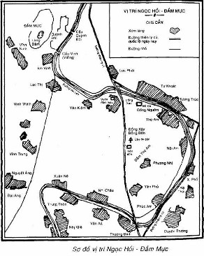
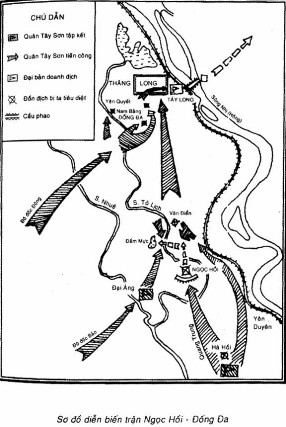

NGÀY 5 TẾT KỶ DẬU TỨC NGÀY 30-1-1789
Đánh cho nó chích luân bất phản,
Đánh cho nó phiến giáp hoàn.
Đánh cho sử tri Nam quốc anh hùng chi hữu chủ.
QUANG TRUNG
Lời hiểu dụ tướng sĩ
Cuối năm Mậu Thân (1788) nhân dân Thăng Long và nhiều vùng ở Bắc Hà đang trải qua những ngày tháng cực kỳ đau thương và tủi nhục, căm hờn và phẫn nộ (Nói chung trong tập sách này, chúng tôi đổi ngày âm lịch ra dương lịch và trình bày theo ngày, tháng dương lịch, khi cần thiết ghi chú thêm ngày tháng âm lịch. Nhưng riêng trận Ngọc Hồi - Đống Đa xảy ra trong những ngày Tết Nguyên đán. Điếu đó có ý nghĩa quan trọng vế thời cơ và đã khắc sâu vào ký ức của nhân dân, nằm trong truyền thống mùa Xuân chiến thắng của dân tộc. Vì vậy trong chương này, chúng tôi trình bày theo ngày tháng âm lịch, có ghi chú ngày tháng dương lịch).
Lợi dụng hành động “rước voi về giày mồ” của bè lũ phong kiến phản động Lê Chiêu Thống, quân Thanh đã tràn sang xâm chiếm nước ta. Một lực lượng viễn chinh lớn gồm 29 vạn quân chiến đấu và quân phục dịch ào ạt vượt qua biên giới.
Chính sử nhà Thanh như Đại Thanh lịch triều thực lục Đông Hoa toàn lục... đều cố tình hạ thấp số quân Thanh sang xâm lược nước ta để giảm bớt thất bại nhục nhã của triều Thanh. Ví dụ Đại Thanh lịch triều thực lục chép số quân Thanh cả thảy chỉ 15.000 (q. 1.314 và q. 1.317). Rõ ràng con số đó quá xa sự thật. Chính những đoạn ghi chép trong bộ sử biên niên đồ sộ đó của nhà Thanh (gồm 1.220 quyển) cũng bộc lộ nhiều điểm mâu thuẫn và thiếu sót. Không có lý do gì, nếu đạo quân 15.000 người mà nhà Thanh phải cử tổng đốc Lưỡng Quảng là Tôn Sĩ Nghị, một viên đại thần vào cỡ thượng thư của triều đình, làm thống soái và dưới trướng của Tôn Sĩ Nghị có nhiều võ quan cao cấp đến thế. Cũng không có lý do gì, nếu quân số chỉ có 15.000 người mà nhà Thanh phải cử những đại thần như Phúc An Khang, tổng đốc Vân Quý (Vân Nam, Quý Châu) là Phú Cương lo liệu quân lương và số lương thực cấp phát buổi đầu theo yêu cầu của Tôn Sĩ Nghị đã đến 9 vạn thạch. Riêng chi phí cho đạo quân xuất phát từ Quảng Tây, số bạc của kho Quảng Tây không đủ, nhà Thanh phải sai Bộ hộ lấy 50 vạn lạng bạc của các tỉnh lân cận bổ sung thêm. Số quân 15.000 là mới tính riêng số quân tinh nhuệ gồm bộ binh, kỵ binh thuộc đạo quân của Tôn Sĩ Nghị và Ô Đại Kinh điều động từ quân chủ lực các tỉnh Quảng Đông, Quảng Tây, Vân Nam, Quý Châu, hoàn toàn chưa kể đạo quân của Sầm Nghi Đống, các lực lượng gọi là “thổ binh”, “nghĩa dũng” mới tổ chức thêm và lực lượng dân phu phục dịch.
Theo bài hịch của Tôn Sĩ Nghị thì tổng số quân Thanh là 50 vạn (Hoàng Lê nhất thống chí, Nhà xuất bản văn học, Hà Nội, 1964, tr. 336). Con số đó có thể có phần khoa trương và bao gồm cả quân chiến đấu lẫn dân phu. Theo điều thứ 8 trong quân luật của Tôn Sĩ Nghị thì “mỗi người lính được cấp một tên phu (Hoàng Lê nhất thống chí, sách đã dẫn, tr. 335). Theo Lê sử toàn yếu và Minh đô sử, thì trong quân xâm lược Thanh lúc đó cứ mỗi chiến binh có đến ba lương binh. Theo sự trù tính của tồng đốc Phú Cương và tuần phủ Tôn Vĩnh Thanh thì sau khi chiếm được Thăng Long, nếu quân Thanh tiếp tục tiến quân vào Nam, phải điều động thêm trên 20 vạn phu tải lương.
Đại Nam chính biên liệt truyện sơ tập (q. 30) cho biết trong cuộc xâm lược này, nhà Thanh đã huy động đến 20 vạn quân chiến đấu từ các lộ Lưỡng Quảng và Vân Quý. Đặc biệt tờ Chiếu phát phối hàng binh của nội địa của Quang Trung do Ngô Thì Nhậm viết, còn chép lại trong bộ Ngô gia văn phái tuyển (q.XV), cho biết số quân Thanh sang xâm lược nước ta là 29 vạn.
Những tài liệu trên tuy không hoàn toàn thống nhất nhưng cũng cho phép bác bỏ những điều ghi chép quá sai sự thật của chính sử nhà Thanh. Theo tờ chiếu của Quang Trung là văn bản chính thức, đại đương thì tổng số quân Thanh xâm lược là 29 vạn, có lẽ bao gồm cả quân chiến đấu và số phu phục dịch đã điều sang nước ta.
Quân Tây Sơn đồn trú ở Bắc Hà lúc bấy giờ do đại tư mã Ngô Văn Sở chỉ huy, chỉ có khoảng bảy, tám nghìn (Theo lời khai của Chu Đình Lý vốn là một viên quan của Tây Sơn bị thổ ty trấn Mục Mã (Cao Bảng) là Bế Nguyên Luật bắt nộp cho nhà Thanh (Đại Thanh lịch triều thực lục, q. 1312, tr. 26). Trước tình thế bất lợi về nhiều mặt, quân Tây Sơn theo chủ trương đúng đắn của Ngô Thì Nhậm, tạm thời rút lui về giừ phòng tuyến Tam Điệp - Biện Sơn.
Tối ngày 19 tháng mười một năm Mậu Thân (ngày 16-12-1788), quân Thanh bắt đầu vượt sông Nhị tiến vào chiếm đóng kinh thành Thăng Long. Giành được thắng lợi tương đối dễ dàng, thống soái của giặc là tổng đốc Lưỡng Quảng Tôn Sĩ Nghị, với chức Chinh Man đại tướng quân, tỏ ra rất chủ quan, khinh địch. Hắn cho việc chiếm Thăng long tiêu diệt quân Tây Sơn dễ như “nhổ nước bọt xoa tay là làm xong việc”, như “thò tay lấy đồ vật ở trong túi, đến sớm lấy sớm, đến muộn lấy muộn đó mà thôi” (Ngô gia văn phái, Hoàng Lê nhất thống chí, bản dịch, Nhà xuất bản Văn học, Hà Nội, 1964, tr. 346 và 350). Nhận được tin thắng trận, vua Càn Long nhà Thanh cũng hết lời khen Tôn Sĩ Nghị là một “Đại thần toàn tài”, là người “một mình gánh vác, điều khiển có phương pháp, cho nên không đầy một tháng mà đã thành công, thật xứng đáng với sự ủy nhiệm của trẫm” (Đại Thanh lịch triều thực lục, q. 1.318, tr. 21 và 241). Hoàng đế nhà Thanh liền phong cho Tôn Sĩ Nghị tước Mưu dũng công hạng nhất và thưởng cho quân linh mỗi người thêm từ một đến hai tháng lương.
Tự mãn trước thành công bước đầu, Tôn Sĩ Nghị ra lệnh tạm thời đóng quân, cho quân sĩ nghỉ ngơi chuẩn bị ăn Tết Nguyên đán. Hắn xin vua nhà Thanh đặt thêm trạm vận chuyển lương thực và tăng thêm quân số để sau Tết, khoảng ngày mồng 6 tháng giêng Kỷ Dậu (ngày 31-1- 1789) sẽ tiến quân “vào tận sào huyệt của giặc, bắt sống Nguyễn Huệ” (Theo Thánh vũ ký của Ngụy Nguyên thì quân Thanh đã lập 70 trạm vận chuyển lương thực trên hai động từ Vân Nam và Quảng Tây đến Thăng Long (q. 6 tờ 35a). Theo Đại Thanh lịch triều thực lục thì từ Thăng Long vào Quảng Nam, quân Thanh trù tính phải lập thêm 123 trạm lương thực và cần thêm 20 vạn phu (q. 1319)). Hắn tuyên bố một cách ngạo nghễ: “Bây giờ đã sắp hết năm, đại quân xa xôi tới đây, cần phải nghỉ nghợi không nên đánh vội. Giặc gầy mà ta đang béo, hãy để chúng tự đến nộp thịt” (Hoàng Lê nhất thống chí, sách đã dẫn, tr. 350). Hắn đóng đại bản doanh tại cung Tây Long (Cung Tây Long ở trên bến Tây Long phía ngoài cửa Ô Tây Long (hay Tây Luông), nay là khoảng phía trên Viện Bảo tàng lịch sử) bên bờ sông Nhị về phía đông nam thành Thăng Long và bố trí các đạo quân thành thế phòng ngự tạm thời vừa để bảo vệ đại bản doanh, vừa để phòng sự tiến công bất ngờ của đối phương. Đạo quân chủ lực gồm quân lính Lưỡng Quảng do Tôn Sĩ Nghị trực tiếp chỉ huy, đóng doanh trại ở bãi cát hai bên bờ sông Nhị, khoảng bến Bồ Đề, ở giữa có cầu phao qua lại. Đại quân Điền Châu, Triều Châu do tri phủ Điền Châu là Sầm Nghi Đống chỉ huy, đóng ở Đống Đa (thuộc trại Phương Thượng, nay thuộc quận Đống Đa, Hà Nội). Đạo quân Vân Quý do đề đốc Ô Đại Kinh chỉ huy, đóng ở Sơn Tây (Hà Tây). Đạo quân Khâm Châu theo đường ven biển sang, đóng ở Hải Dương (Chính sử và các tài liệu của ta không ghi chép đạo quân này. Nhưng có một số tài liệu nhà Thanh có đề cập đến. Chúng tôi tạm thời đưa ra để tiếp tục nghiên cứu thêm).
Kinh thành Thăng Long và một bộ phận đất Bắc Hà dã bị quân giặc chiếm đóng, giày xéo. Tôn Sĩ Nghị buông lỏng cho quân lính “mặc sức làm điều phi pháp” (Hoàng Lê nhất thống chí, sách đã dẫn, tr. 350). Hàng ngày, bọn chúng kéo nhau đi cướp bóc, hãm hiếp, giết người, gây ra những tội ác tày trời đối với nhân dân ta. Bọn chúng “kiếm mọi cách vu hãm những người lương thiện, áp bức, cướp bóc những thà giàu có, thậm chí giữa chợ giữa đường cũng cướp giật của cải, hãm hiếp đàn bà, không còn kiêng sợ gì cả” (Hoàng Lê nhất thống chí, tr. 348).
Bè lũ Lê Chiêu Thống cũng bám gót quân xâm lược trở về kinh thành. Lê Chiêu Thống hiện nguyên hình là một tên vua bù nhìn ươn hèn, đốn mạt. Nhân dân Thăng Long than thở với nhau: “Nước Nam ta từ khi có đế, có vương đến nay, chưa thấy bao giở có ông vua luồn cúi đê hèn như thế” (Hoàng Lê nhất thống chí, tr. 348). Dựa vào thế quân Thanh, bọn phong kiến bán nước này chỉ lo trả thù báo oán một cách ti tiện, dã man và tìm cách vơ vét lương thực của nhân dân để cung đốn cho hàng chục vạn quân xâm lược. Nhân dân Bắc Hà đã mấy năm liền mất mùa, đói kém, nay lại càng khốn khổ vì nạn đốc thúc quân lương của bọn chúng.
Càng căm ghét quân cướp nước và bán nước, nhân dân Bắc Hà càng sôi sục căm thù, hướng về lá cờ cứu nước sáng người chính nghĩa của quân Tây Sơn. Đó là cơ sở chính trị quan trọng để phong trào Tây Sơn phát huy đến cao độ sức mạnh đoàn kết toàn dân, vươn lên hoàn thành sứ mạng chống ngoại xâm, bảo vệ độc lập dân tộc. Quân Tây Sơn tạm thời rút lui, như Ngô Thì Nhậm đã nói, chẳng qua là để “cho chúng (chỉ quân Thanh) ngủ trọ một đêm, rồi lại đuổi đi” (Hoàng Lê nhất thống chí, tr. 342). Cuộc rút lui chủ dộng và có tính toán đó, không những bảo toàn được lực lượng của ta mà còn kích động thêm tính kiêu căng, khinh địch của Tôn Sĩ Nghị và tạo ra thời cơ, chuẩn bị điều kiện cho cuộc phản công chiến lược quét sạch quân giặc ra khỏi bờ cõi. Vì vậy, Nguyễn Huệ tán thành hành dộng chiến lược của quân Tây Sơn ở Bắc Hà và đánh giá cao chủ trương của Ngô Thì Nhậm, coi đó là một kế “rất đúng”.
*
* * *
Trong lúc Tôn Sĩ Nghị say sưa, tự mãn với thắng lợi đã giành được và quân Thanh đang mải mê chuẩn bị ăn Tết, thì cả dân tộc ta được phong trào cách mạng nông dân Tây Sơn cổ vũ mạnh mẽ, và dưới sự tổ chức, lãnh đạo tuyệt vời của người anh hùng “áo vải” Nguyễn Huệ, đã vùng đứng dậy, kiên quyết và khẩn trương bước vào cuộc giao tranh quyết định với quân thù.
Ngày 20 tháng mười một (ngày 17-12-1788), khi quân Thanh tiến vào Thăng Long thì quân Tây Sơn ở Bấc Hà đã rút về Tam Điệp - Biện Sơn. Quân ta lợi dụng địa hình lợi hại ở vùng này, xây dựng thành một chiến tuyến vững chắc vừa có thề chặn đứng cuộc tiến công của quân địch vào Nam, vừa chuẩn bị địa bàn tập kết cho đại quân và căn cứ xuất phát cho cuộc phản công này.
Phòng tuyến Tam Điệp - Biện Sơn đến nay vẫn còn di tích khá rõ. Tam Điệp là một dãy núi đá vôi nằm giữa Thanh Hóa - Ninh Bình (nay thuộc xã Tam Điệp tỉnh Ninh Bình), phía trên nối liền với núi rừng Hòa Bình, phía dưới ăn ra sát biển. Những đường giao thông thủy bộ từ Thăng Long vào Nam đều phải di qua dãy núi này: đường “thượng đạo” qua Phố Cát, đường thiên lý qua đèo Tam Điệp, đường thủy qua cửa biền Thần Phù. Bộ binh Tây Sơn lui về giữ Tam Điệp trước hết nhằm chiếm lĩnh một tuyến chướng ngại thiên nhiên lợi hại, giành nơi đứng chân vững chãi trong phòng ngự cũng như tiến công. Quân Tây Sơn lợi dựng dãy núi Tam Điệp như một bức thành tự nhiên và bố trí phòng ngự ở những vị trí xung yếu nhằm bịt kín các đường giao thông thủy bộ qua đây mà quan trọng nhất là đường thiên lý qua đèo Tam Điệp. Ở đây còn di tích cửa ải Tam Điệp mà nhân dân địa phương thường gọi là “Kẽm Đó” và thành, lũy xưa. Biện Sơn là một hòn đảo ở phía nam Thanh Hóa, nằm trên con đường ven biền từ bắc vào nam. Trên hòn đảo này còn di tích ba tòa thành nhỏ hình tròn và bán nguyệt, xây từ đời Lê, sau này nhà Nguyễn sửa chữa tu bổ lại. Thủy binh Tây Sơn rút về đóng ở Biện Sơn để khống chế con đường ven biển và chuẩn bị một căn cứ thủy quân cho cuộc phản công chiến lược nay mai.
Ngày 24 tháng mười một (ngày 21-12-1788), tại Phú Xuân, Nguyễn Huệ nhận được tin cấp báo của tướng Ngô Văn Sở do đô đốc Nguyễn Văn Tuyết phi ngựa mang vào. Và ngày hôm sau - ngày 25 (ngày 22-12-1788) - Nguyễn Huệ trịnh trọng làm lễ đăng quang, chính thức lên ngôi hoàng đế, đặt niên hiệu là Quang Trung, rồi lập tức hạ lệnh xuất quân. Quang Trung tự thống lĩnh đại quân theo hai đường thủy bộ, tiến ra Bắc.
Ngày 20 tháng chạp (ngày 15-l-1789), đại quân Tây Sơn tập kết tại phòng tuyến Tam Điệp - Biện Sơn. Thủy binh tập kết tại căn cứ Biện Sơn. Bộ binh tập kết ở phía sau phòng tuyến Tam Điệp, chủ yếu là vùng huyện Hà Trung tỉnh Thanh Hóa ngày nay. Ở đây còn nhiều di tích và truyền thuyết phản ánh dịa bàn tập kết của quân Táy Sơn như Gò Bia, đồi ông Đùng - nơi pháo binh Táy Sơn tập bắn; Thung Voi - nơi nhốt voi chiến; đồng Cắm Quân - nơi đóng quân; làng Gạo - nơi chứa lương thực; đồng Cán Cờ, đồng Con Chuối - nơi quân Tây Sơn bày cờ tập trận và tập chém đổ cả một vùng chuối, v.v.
Tại khu vực tập kết, Quang Trung đã hoàn thành công việc chuẩn bị cho cuộc phản công chiến lược và đề ra kế hoạch tác chiến cụ thể nhằm nhanh chóng tiêu diệt quân xâm lược, giải phóng kinh thành Thăng Long và giải phóng cả đất nước. Quyết tâm sắt đá và kế hoạch mưu trí đó dựa trên sự nghiên cứu tường tận, phân tích và đánh giá đúng đắn toàn bộ tình hình và so sánh lực lượng địch ta lúc bấy giờ.
Quân Thanh đã chiếm được kinh thành và khống chế cả vùng đồng bằng Bắc Hà. Quân địch ngoài 29 vạn quân Thanh, còn có khoảng 2 vạn quân “cần vương” của bù nhìn Lê Chiêu Thống (Việt sử thông giám cương mục cho biết vài vạn quân Lê Chiêu Thống bao gồm “nghĩa binh các đạo” và “cựu binh Thanh Nghệ” (Chính biên, q. 47, tờ 38b). “Nghĩa binh” là quân lính mới tuyển mộ, “cựu binh” là quân lính của vua Lê, chúa Trịnh trước đây (gọi là “ưu binh”, hay quân tam phủ, hay quân Thanh Nghệ) đã bị tan rã, nay tập hợp lại). Trong lúc đó, ở Phú Xuân quân đội Tây Sơn dưới quyền chỉ huy của Nguyễn Huệ chỉ có khoảng 6 vạn quân (Theo thư của Doussain gửi Blandi ngày 6-6-1787. Nguyên bản trong Archives des Missions étrangères, số 746, tr. 29; L. Cadière dẫn trong Documents relatifs à l’epoque de Gia Long, B.E.F.E.O., 1912). Tất nhiên Nguyễn Huệ phải để một bộ phận quân đội đó ở lại bảo vệ Phú Xuân và đề phòng sự quấy rối của bè lũ phong kiến phản động Nguyễn Ánh ở mặt Nam. Nguyễn Huệ biết rằng “quân lính thì cốt hòa thuận không cốt đông, cốt tinh nhuệ không cốt nhiều” và thắng bại của chiến tranh “không phải lấy mạch đè yếu, lấy nhiều hiếp ít” (Ngô gia văn phái, Bang gia lục, sách chữ Hán). Nhưng mặt khác Nguyễn Huệ cũng nhận thức sâu sắc tầm quan trọng của số lượng quân đội trong chiến tranh và sự cần thiết phải khắc phục tình trạng so sánh quá chênh lệch về quân số giữa ta và dịch. Do dó, trên đường hành quân từ Phú Xuân ra Tam Điệp, Nguyễn Huệ đã cố gắng bổ sung và tăng cường quân số, giải quyết vấn đề số lượng quân đội một cách đúng mức, hợp lý.
Với truyền thống yêu nước nồng nàn, hàng vạn thanh niên trai tráng đã tự nguyện gia nhập hàng ngũ quân Tây Sơn hăng hái góp phần diệt giặc cứu nước. Chỉ hơn 10 ngày dừng quân lại ở Nghệ An, Nguyễn Huệ đã tuyển thêm được hàng vạn tân binh, đưa số quân Tây Sơn lên 10 vạn quân và vài trăm voi chiến (Sử quán triều Nguyễn, Đại Nam chính biên liệt truyện sơ tập, q 30). Ở Thanh Hóa, lúc đó xuất hiện một bài ca kêu gọi nhân dân nhập ngũ đến nay vẫn còn lưu truyền trong dân gian:
Thùng thùng trống đánh quân sang,
Chợ Già trước mặt, quán Mau bên đàng.
Qua Chiêng thì rẽ sang Giàng
Qua quán Đông Thổ vào làng Đình Huơng.
Anh đi theo chúa Tây Sơn,
Em về cày cuốc mà thương mẹ già.
(Ca dao sưu tầm ở Thanh Hóa, Nhà xuất bản Văn học, Hà Nội, 1963, tr. 38. Chợ Già, quán Mau, Chiêng thuộc huyện Hoằng Hóa; Giàng, Đông Thổ, Đình Hương thuộc huyện Đông Sơn. Đó là những địa điểm nằm trên con đường thiên lý cũ đi về làng Thọ Hạc, nơi Quang Trung dừng quân lại làm lễ thệ sư trên đường tiến quân ra Bắc diệt quân Thanh).
Tại Tam Điệp, Quang Trung đã có một lực lượng quân đội hùng hậu trên 10 vạn quân. Sự chênh lệch về số lượng vẫn tồn tại ở mức độ đáng kể. Quân đội Tây Sơn bước vào cuộc quyết chiến với so sánh lực lượng gần như một chọi ba. Nhưng bên cạnh thế yếu về số lượng đó, Quang Trung đã tạo ra và phát huy nhiều ưu thế hơn hẳn địch.
Phong trào Tây Sơn vốn bắt nguồn từ một cuộc khởi nghĩa nông dân lúc bấy giờ đã phát triển lên thành một phong trào dân tộc. Quân đội Tây Sơn từ tổ chức vũ trang của nông dân và các tầng lớp dân nghèo đã phát triển lên thành ‘quân đội của nông dân, về sau trở thành quân đội của dân tộc” (Võ Nguyên Giáp, Vũ trang quần chúng cách mạng xây dựng quân đội nhân dân, Nhà xuất bản Quân đội nhân dân, Hà Nội, 1973. tr. 80). Trải qua 17 năm (1771-1788) tôi luyện trong ngọn lửa của cuộc đấu tranh giai cấp và đấu tranh dân tộc quyết liệt quân đội đó đã trưởng thành và lớn mạnh vế mọi mặt. Nguyễn Huệ đã đưa trính độ tổ chức và trang bị của quân đội Tây Sơn lên một bước phát triển rất cao.
Quân đội Tây Sơn bao gồm đủ các binh chủng: bộ binh, kỵ binh, tượng binh, thủy binh. Tượng binh với hàng trăm con voi chiến hùng hổ là một binh chủng tiến công và đột phá rất lợi hại mà quân Thanh không có. Thủy binh được trang bị nhiều loại thuyền chiến và thuyền vận tải lớn. loại thuyền to của Tây Sơn có thể chở được voi chiến, có thể mang đến 60 khẩu đại bác (loại 24 livres) và chở 700 người (Theo thư của Barizy gửi Letondal trong Archives des Missions étrangères de Pari, Cochinchine, tài liệu đã, t. 801, tr. 867). Sau này một sĩ quan người Pháp là Se-nhô (Jean Baptiste Chaigneau) đã có dịp chạm trán với thủy quân Tây Sơn, thừa nhận rằng: “Trước khi tận mặt thấy thuỷ quân của địch (tức quân Tây Sơn), tôi có ý khinh thường, nhưng xin thú thực tôi đã lầm, địch có những tàu mang đến 50, 60 khẩu đại bác...” (Thư của Jean Baptiste Chaigneau gửi Baizy trong Archives des Mission étrangères de Paris, Cochinchine, tài liệu đã dẫn, t. 801, tr. 857).
Trong cuộc kháng chiến chống Thanh, thủy binh Tây Sơn giữ vai trò quan trọng trong việc vận chuyển quân đội, bảo đảm tốc độ hành quân nhanh và được Quang Trung sử dụng có hiệu quả làm những mũi vu hồi bao vây và chặn địch rút chạy. Quân đội Tây Sơn được trang bị nhiều loại vũ khí tối tân lúc đó như hỏa hồ (một loại súng phun lửa) và đại bác các cỡ. Đặc biệt Quang Trung có một cải tiến quan trọng là không những đặt đại bác lên chiến thuyền, dùng voi kéo đại bác cỡ lớn, mà còn đặt dại bác lên voi chiến như một thứ “pháo tự hành”.
Tổ chức và trang bị của quân đội Tây Sơn không những không thua kém quân Thanh mà còn có những mặt ưu việt hơn quân địch. Nhưng ưu thế chủ yếu của quân Tây Sơn là tinh thần chiến đấu dũng cảm, khí thế tiến công mãnh liệt và sự tham gia, ủng hộ nhiệt tình của nhân dân. Quang Trung thấy rõ sức mạnh định đoạt của những ưu thế chính trị đó và ra sức phát huy tác dụng của nó trong lúc chuẩn bị cũng như thực hành phản công.
Vốn từ quân đội nông dân trở thành quân đội dân tộc, quân Tây Sơn đã mang sẵn trong mình tinh thần quật khởi của nông dân kết hợp với truyền thống yêu nước bất khuất của dân tộc. Bằng nhiều hình thức động viên phong phú tác động sâu sắc đến tư tường và tình cảm con người, Quang Trung chỉ rõ kẻ thù nguy hiểm bậc nhất của cả dân tộc lúc này là quân xâm lược Thanh và bè lũ bán nước Lê Chiêu Thống để từ đó, khơi sâu chí căm thù và quạt bùng lên ngọn lửa yêu nước trong toàn thể quân sĩ và nhân dân.
Trong lễ đăng quang cử hành tại Phú Xuân trước lúc xuất quân, Quang Trung đã lên án hành động phản bội của Lê Chiêu Thống để xóa bỏ những ảnh hưởng cuối cùng của tên vua bán nước này và kêu gọi nhân dân đoàn kết lại dưới lá cờ cứu nước của Tây Sơn: “Trẫm hai lần gây dựng họ Lê, thế mà tự quân họ Lê không biết giữ xã tắc, bỏ bước đi bôn vong; sĩ dân Bắc Hà không hướng về họ Lê, chỉ trông mong vào Trẫm” (Chiếu lên ngôi hoàng đế do Ngô Thì Nhậm soạn, bản dịch trong Hợp tuyển thơ văn Việt Nam thế kỷ XVIII - giữa thế kỷ XIX, Nhà xuất bản Văn hóa, Hà Nội, 1963, tr. 222).
Tại trấn doanh Nghệ An (thành phố Vinh), Quang Trung tổ chức một cuộc duyệt binh lớn và đọc bài hịch kêu gọi quân sĩ. Quang Trung đã khẳng định sự tồn tại bền vững của đất nước: “Trong khoảng vũ trụ, đất nào sao nấy đã phân biệt rõ ràng, phương Nam, phương Bắc chia nhau mà cai trị...” và nêu cao lịch sử chống ngoại xâm oanh liệt của dân tộc từ khởi nghĩa Hai Bà Trưng cho đến các cuộc kháng chiến chống Tống, chống Nguyên, chống Minh với truyền thống “thuận lòng người, dấy nghĩa quân, để chỉ đánh một trận là thắng và đuổi chúng về phương Bắc”. Tiếp tục những trang sử vẻ vang đó, Quang Trung kêu gọi: “Nay người Thanh lại sang, mưu đồ lấy nước Nam ta đặt làm quận huyện, không biết trông gương mấy đời Tống, Nguyên, Minh ngày xưa. Vì vậy ta phải kéo quân ra đánh đuổi chúng...” (Hoàng Lê nhất thống chí, sách đã dẫn, tr. 360).
Trên cơ sở tư tưởng và tình cảm đó, Quang Trung nâng cao ý chí chiến đấu, xây dựng cho quân đội tinh thần quyết chiến quyết thắng, quyết tâm và niềm tin mãnh liệt. Tại Thọ Hạc (thành phố Thanh Hóa), Quang Trung làm lễ “thệ sư” và ra lệnh: “Bớ chư quân! Phàm ai bằng lòng chiến đấu thì hãy vì ta giết sạch quân giặc. Nếu ai không muốn thì hãy xem ta giết vài vạn người trong một trận, đó không phải là chuyện hiếm làm đâu” (Nguyễn Thu, Lê quý kỷ sự, sách chữ Hán, chép tay). Cũng trong buổi lễ tuyên thệ trang trọng đó, Quang Trung đọc bài hiểu dụ tướng sĩ với những lời tuyên bố đanh thép biểu thị cao độ ý chí độc lập tự chủ và quyết tâm tiêu diệt địch:
Đánh cho để dài tóc,
Đánh cho để đen răng.
Đánh cho nó chích luân bất phản,
Đánh cho nó phiến giáp bất hoàn,
Đánh cho sử tri Nam quốc anh hùng chi hữu chủ.
(Nguyên văn chữ nôm của Quang Trung. Hai câu trên nói lên ý thức đánh giặc để bảo vệ nền văn hóa dân tộc lâu đời, để gìn giữ những phong tục tập quán của nhân dân. Hai câu giữa nói lêu quyết tám đánh tiêu diệt khiến cho quân giặc không còn chiếc xe nào trở về, không còn một mình giáp nào nguyên. Câu cuối nghĩa là: đánh cho biết rằng nước Nam anh hùng là có chủ.).
Lễ “thệ sư” ở Thọ Hạc là một hình thức động viên chính trị có tác dụng bồi dưỡng thêm bước nữa ý chí, nghị lực và khí thế của quân đội, nâng cao tầm vóc của quân đội lên ngang với yêu cầu của sứ mạng lịch sử. Sách Lê kỷ sự mô tả không khí buổi lễ đó như sau: “Huệ dứt lời, chư quân dạ ran như sấm, rung động cả hang núi, trời đất đổi mầu. Rồi chiêng trống đồng thời khua vang, quân lính gấp đường ra Bắc”.
Trước nạn ngoại xâm, Quang Trung đã biết nắm lấy và giương cao ngọn cờ dân tộc để tổ chức và động viên quân đội để cổ vũ toàn dân đứng lên chống giặc. Quang Trung đã đưa phong trào nông dân Tây Sơn lên đỉnh cao của phong trào dân tộc, chuẩn bị một cuộc chiến tranh nhân dân chống xâm lược rất sâu rộng. Nhân dân đã tự nguyện tham gia vào quân đội trực tiếp chiến đấu, đã ủng hộ quân đội về mọi mặt, đã cung cấp lương thực, tạo thành lực lượng hậu cần tại chỗ cho quân dội. Một giáo sĩ người Pháp có mặt ở nước ta thời đó là Bít-xa-se (De la Bissachère) viết trong tập hồi ký của mình: khi được tin quân Thanh xâm lược, Quang Trung lập tức tiến ra Bắc Hà, “ông đi suốt ngày đêm, dọc đường dùng quyền lực thu nạp tất cả những người có thể cầm được vũ khí, ông không có lương thực nào khác ngoài lương thực tìm thấy trong các làng mà ông đi qua” (Ch. Maybon, La relation sur le Tunkin et la Cochinchine de M.De la Bissachère, Paris, 1920, tr. 182. Tài liệu này còn được ghi chép trong État actuel du Tunkin, de la Cochichine et des autres royames de Cambodge, Laos et Lac Tho par M. De la Bissachère, Paris, 1812, t. II, tr. 170, và Voyage commercial et politique aux Indes orientales aux iles Philippines, à la Chine avec des notions sur la Cochinchine et le Tonquin pendant les années 1803, 1804, 1805, 1806 ét 1807, Paris, 1810, t. III, tr. 230).
Trước mặt quân Thanh không phải chỉ có 10 vạn quân Tây Sơn thiện chiến mà là cả một dân tộc anh hùng đang vùng dậy chống ngoại xám. Đó là bước chuẩn bị có ý nghĩa quyết định bảo đảm thắng lợi của trận tập kích chiến lược sắp tới Quang Trung đã tiến hành bước chuẩn bị đó trong một thời gian rất khẩn trương (khoảng hơn 1 tháng) và tiến hành ngay trên đường tiến quân từ Phú Xuân ra Bắc Hà. Bằng những cố gắng lớn lao, Quang Trung đang làm thay đổi dần so sánh lực lượng giữa ta và địch, tạo nên những điều kiện chính trị, quân sự cần thiết để chiến thắng quân thù bằng những đòn phản công sấm sét.
Với khối óc nhạy cảm và tầm mắt sắc bén của nhà quân sự kiệt xuất, Quang Trung không những đánh giá đúng chỗ mạnh, chỗ yếu của địch mà còn nhanh chóng phát hiện ra ý đồ và sai lầm của địch. Quân Thanh với ưu thế binh lực, đang trên đà tiến công thắng lợi, bỗng dừng lại ở Thăng Long trong thời gian hơn một tháng. Tôn Sĩ Nghị muốn để cho quân lính nghỉ ngơi ăn Tết và chuẩn bị thêm lực lượng rồi dự định sau Tết, ngày mồng 6 tháng giêng sẽ tiếp tục tiến công. Bộ chỉ huy quân địch đã phạm một sai lầm chiến lược nghiêm trọng là đánh giá quá thấp lực lượng đối phương, và từ thế tiến công chuyển sang hình thái phòng ngự tạm thời. Do đó, chúng đã tự để mất quyền chủ động ban đầu và không phát huy được tác dụng của ưu thế binh lực. Từ đại tướng Tôn Sĩ Nghị cho đến các tướng lĩnh và quân lính đều hết sức chủ quan, khinh địch, chỉ lo cướp bóc, vơ vét và chuẩn bị ăn Tết. Tôn Sĩ Nghị “mặc cho quân lính các đồn tự tiện bỏ cả đội ngũ, đi lại lang thang, không còn có kỷ luật gì cả. Có kẻ đi ra khỏi thành đến hơn mười dặm để kiếm củi đun, có kẻ đi tới các chợ búa dân gian để buôn bán, hàng ngày sớm đi tối về xem như việc bình thường. Bọn tướng tá cũng ngày ngày chơi bời, tiệc tùng, không hề để ý gì đến việc quân. Hễ ai nhắc đến tình hình giặc giã thì bọn họ đáp rằng: chúng nó như cá chậu chim lồng, còn chút hơi thừa thoi thóp, không đáng nói đến” (Hoàng Lê nhất thống chí, sách đã dẫn, tr. 3 53). Kỷ luật và tinh thần chiến đấu của quân lính gần như bị tê liệt. Còn bọn bù nhìn Lê Chiêu Thống thì từ ngày 25 tháng chạp đã làm lễ “phong ấn” (cất ấn để nghỉ việc ăn Tết). Từ đó “các quan và quân lính cũng đều cho phép nghỉ mười ngày để cùng vui đón tiết xuân” (Hoàng Lê nhất thống chí, sách đã dẫn, tr. 354).
Quang Trung tìm cách khoét sâu thêm sai lầm của địch, kích động thêm tinh thắn chủ quan của Tôn Sĩ Nghị. Khi tiến quân ra đến Nghệ An, Thanh Hóa, Quang Trung sai người “đưa thư đến Sĩ Nghị để xin đầu hàng, lời lẽ trong thư rất là nhũn nhặn, khiêm tốn” (Việt sử thông giám cương mục, sách đã dẫn, q. 47, tr. 40, bản dịch, t. XX, tr. 61). Tôn Sĩ Nghị càng ngạo mạn, ra lệnh cho Quang Trung: “Hãy rút quân về Thuận Hóa để chờ phân xử” (Lê quý kỷ sự, sách đã dẫn).
Phát hiện và chớp được thời cơ chiến lược có một không hai đó, Quang Trung quyết định giành quyền chủ động, mở cuộc tập kích chiến lược chớp nhoáng, tung toàn bộ lực lượng ra đánh tan quân địch vào lúc chúng bất ngờ nhất. Quang Trung biết thời cơ đó chỉ đóng khung trong quãng thời gian khi quân địch chuyển sang phòng ngự tạm thời cho đến trước khi chúng tiếp tục tiến công nghĩa là trước ngày 6 tháng giêng Tết Kỷ Dậu. Thực hành phản công và quyết chiến chiến lược vào dịp đó, nhất là vào những ngày Tết, tức là giành lại được quyền chủ động tiến công địch và tạo nên sự bất ngờ lớn của hành động chiến lược.
Ý đồ quyết tâm chiến lược trên đây của Quang Trung hình thành khá sớm. Trong những ngày dừng quân lại ở trấn doanh Nghệ An, Quang Trung đã có ý định đó. Điều này được thể hiện rõ trong buổi nói chuyện giữa Quang Trung với Nguyễn Thiếp - một danh sĩ có tiếng của đất Nghệ An. Bàn về mưu kế đánh giặc, Nguyễn Thiếp nói: “Bây giờ trong nước trống không, lòng người tan rã. Quân Thanh ở xa tới đây không biết tình hình quân ta yếu hay mạnh, không hiểu rõ thế nên đánh nên giữ ra sao. Chúa công đi ra chuyến này, không quá mười ngày, giặc Thanh sẽ bị dẹp tan” (Hoàng Lê nhất thống chí, sách đã dẫn, tr. 359). Quang Trung tỏ ý tán đồng ý kiến đó vì đấy cũng chính là tư tưởng chiến lược đã hình thành rõ nét trong sự phán đoán và suy nghĩ của Quang Trung.
Càng nghiên cứu kỹ tình hình địch, Quang Trung càng củng cố và khẳng định quyết tâm chiến lược trên. Vừa ra đến Tam Điệp, Quang Trung đã tuyên bố với các tướng lĩnh ở Bắc Hà: “Lần này ta ra thân hành cầm quân, phương lược tiến đánh đã có tính sẵn. Chằng qua mười ngày, có thể đuổi được người Thanh” (Hoàng Lê nhất thống chí, sách đã dẫn, tr. 361). Sau đó, trong bữa tiệc khao quân trước giờ xuất trận, Quang Trung khẳng định lại một lần nữa quyết tâm đánh tan quân giặc, giải phóng thành Thăng Long trước ngày mồng 5 tháng giêng để ngày 5 sẽ mở tiệc mừng chiến thắng giữa kinh thành (Hoàng Lê nhất thống chí, sách đã dẫn, tr. 362; Đại Nam chính biên liệt truyện sơ tập, sách đã dẫn, q. 30, tr. 33).
Nhưng từ quyết tâm chiến lược, xây dựng thành kế hoạch tác chiến cụ thể, Quang Trung còn phải giải quyết hàng loạt vấn đề phức tạp. Quân Thanh tuy chủ quan, khinh địch và bộc lộ những sai lầm chiến lược, nhưng lực lượng vẫn nguyên vẹn và giữ ưu thế về số lượng. Tình hình đó đòi hỏi Quang Trung phải tìm hiểu đầy đủ sự bố trí lực lượng của địch, địa hình từng khu vực, thấy rõ chỗ mạnh, chỗ yếu trong thế trận phòng ngự của địch để xác định hướng tiến công đúng đần, sử dụng binh lực một cách hợp lý nhất, tạo nên một thế trận tiến công lợi hại nhất bảo đảm đánh tan và tiêu diệt địch một cách nhanh chóng, bất ngờ, triệt để.
Tuy đã chuyển sang thế phòng ngự tạm thời trong những ngày Tết nhưng Tôn Sĩ Nghị vẫn giữ ý đồ tiếp tục tiến công. Bốn đạo quân Thanh với tổ chức, phiên chế không thay đổi, đóng ở bốn vị trí: Tây Long, Đống Đa, Hải Dương, Sơn Tây. Gần hai vạn quân của Lê Chiêu Thống thì một bộ phận quan trọng đóng trong nội thành Thăng Long, còn chia nhau đóng giữ một số trấn ở Bắc Hà. Như vậy Thăng Long là khu vực tập trung binh lực, là trung tâm phòng thủ của địch. ở đây có đại bản doanh của Tôn Sĩ Nghị ở cung Tây Long, có đại quân chủ lực tinh nhuệ do Tôn Sĩ Nghị trực tiếp chỉ huy đóng ở bãi cát hai bên bờ sông Nhị, có đạo quân Sầm Nghi Đống đóng ở Đống Đa và đội quân Lê Chiêu Thống trong thành nội. Hai đạo quân Thanh đóng ở Sơn Tây và Hải Dương cũng để bảo vệ hai cạnh sườn phía tây - bắc và đông - nam của Thăng Long. Ba khu vực đóng quân của địch: Thăng Long, Sơn Tây, Hải Dương, hình thành một thế trận phòng ngự có thể tiếp ứng cho nhau khi bị tiến công và đồng thời, có thể triển khai đội hình tiếp tục tiến công đánh vào phòng tuyến Tam Điệp - Biện Sơn của quân Tây Sơn.
Theo sự xét đoán của Tôn Sĩ Nghị, nếu quân Tây Sơn có dám tiến công thì hướng tiến công chủ yếu chỉ có thể là con đường thiên lý qua Tam Điệp ra Thăng Long. Do đó, từ Thăng Long về phía nam chừng 60 dặm, Tôn Sĩ Nghị lập ba đồn lũy, chia quân đóng giữ. Đó là đồn Ngọc Hồi (Thường Tín, Hà Tây), đồn Nhật Tảo (Duy Tiên, Nam Hà) và đồn ở bờ bắc sông Nguyệt Quyết (Thanh Liêm, Nam Hà). Nhưng như Tôn Sĩ Nghị đã nói, chỉ là “canh gác từ xa để đề phòng bất trắc vậy” (Hoàng Lê nhất thống chí, sách đã dẫn, tr. 350).
Mãi đến khi được tin Quang Trung đang tuyển quân ở Nghệ An, Thanh Hóa, chuẩn bị tiến công ra Bác, Tôn Sĩ Nghị mới lo tăng cường lực lượng phòng thủ xung quanh Thăng Long, chỉ yếu là mặt Nam. Hắn ra lệnh “đề phòng trước, cho quân đi đóng giữ ở tất cả các nơi hiểm yếu tại trên khắp bốn ngả đường” (Trần Nguyên Nhiếp, An Nam quân doanh kỷ yếu, sách viết tay của Quốc lập đồ thư quán Bắc Kinh, do Trần Văn Giáp sưu tầm). Đặc biệt, phía nam Thăng Long, Tôn Sĩ Nghị sai lập thêm nhiều đồn lũy mới, tạo thành một nệ thống phòng thủ dài gần 90 ki-lô-mét từ Gián Khẩu (Ninh Bình) đến Thăng Long. Đồn tiền tiêu của địch đặt ở Gián Khẩu, tiếp theo đó là các đồn Nguyệt Quyết, Nhật Tảo, Hà Hồi, Ngọc Hồi, Văn Điển. Đề đốc Hứa Thế Hanh là phó tướng của Tôn Sĩ Nghị được giao trọng trách trực tiếp chỉ huy mặt trận phía nam, phụ trách hệ thống phòng thủ chủ yếu này.
Đặc điểm của hệ thống phòng thủ phía nam Thăng Long là bao gồm nhiều đồn binh bố trí theo những cự ly nhất định trên một tuyến dài theo hướng đường thiên lý. Những dồn binh đó nói chung càng gần Thăng Long càng dày hơn, kiên cố hơn và có binh lực lớn hơn. Trong cả hệ thống phòng thủ, đồn Hà Hồi giữ vị trí quan trọng, và đặc biệt đồn Ngọc Hồi là cứ điểm then chốt đóng vai trò quyết định. Đó là một hệ thống phòng thủ có chiều sâu, có trọng điểm, nhưng cũng có nhược điểm là bố trí thành tuyến dài, nhô về phía đối phương, hai bên sườn bị hở, dễ bị chia cắt hoặc vu hồi. Cách bố phòng thể hiện rõ ý đồ chia Tôn Sĩ Nghị là buộc đối phương phải giao chiến từ xa Thăng Long, phải đột phá liên tục và càng tiến sâu càng phải đột phá những cứ điểm mạnh hơn. Do đó, tốc độ tiến công của đối phương sẽ chậm dần, lực lượng bị tiêu hao, sức chiến đấu bị giảm sút. Đồn Ngọc Hồi với binh lực lớn và công sự kiên cố có thể tiếp ứng cho các vị trí bị uy hiếp và đủ sức ngăn chặn cuộc tiến công của đối pHương. Trong trường hợp xấu nhất, đạo quân chủ lực của Tôn Sĩ Nghị ở Thăng Long cũng có thể kịp thời cơ động chi viện cho các mặt trận, phá tan cuộc tiến công đó.
Quang Trung quyết định chọn khu vực Thăng Long làm mục tiêu tiến công chủ yếu. Chỉ có đánh vào sào huyệt địch, đập nát thế trận phòng ngự, tiêu diệt những lực lượng chủ lực tinh nhuệ của địch thì mới tranh thủ được thời cơ phát huy cao độ yếu tố bất ngờ, giành thắng lợi quyết định nhanh, gọn nhất.
Nhưng đánh vào Thăng Long lúc đó là đánh vào trung tâm phòng thủ của địch, phải đương đầu với chủ lực của Tôn Sĩ Nghị, cánh quân Hứa Thế Hanh, cánh quân Sầm Nghi Đống và quân Lê Chiêu Thống. Vậy nên tiến công trên một hướng hay nhiều hướng và chọn hướng nào là chủ yếu? Đó là một vấn đề quan trọng đòi hỏi phải tính toán, cân nhắc một cánh thận trọng, khoa học, nhất là trong tương quan lực lượng: quân số Tây Sơn chỉ bằng khoảng một phần ba quân Thanh. Tiến công trên một hướng thì Quang Trung có thể tập trung binh lực tiêu diệt từng bộ phận quân địch, nhưng mặt khác, Tôn Sĩ Nghị lại có điều kiện điều dộng quân từ các hướng khác đến tiếp ứng. Tiến công trên nhiều hướng thì quân Tây Sơn dễ bị phân tán lực lượng, khó bảo đảm giành được thắng lợi quyết định. Để giải quyết những mâu thuẫn đó, Quang Trung chủ trương tiến công địch trên hai hướng và làm sao phải chia cắt cô lập các đạo quân địch, đặc biệt là không cho Tôn Sĩ Nghị kịp thời sử dụng một cách tập trung đạo quân chủ lực đóng ở hai bên bờ sông Nhị.
Quang Trung chọn hệ thống phòng thủ phía nam Thăng Long của địch làm hướng tiến công chủ yếu. Chủ lực của Tây Sơn sẽ tiến công chính diện, hết sức mãnh liệt, phá tung hệ thống phòng thủ chủ yếu này, tiêu diệt cánh quân Hứa Thế Hanh rồi tiến lên Thăng Long.
Đồng thời, một bộ phận quân Tây Sơn sẽ bất ngờ tập kích, nhanh chóng tiêu diệt đạo quân Sầm Nghi Đống ở Đống Đa. Đạo quân này không tinh nhuệ nhưng giữ một vị trí quan trọng: bảo vệ cửa ngõ phía tây nam thành Thăng Long và gần đại bản doanh của Tôn Sĩ Nghị. Sau khi tiêu diệt đạo quân này, quân Tây Sơn sẽ lập tức tràn vào Thăng Long và thọc sâu uy hiếp dại bản doanh của Tôn Sĩ Nghị. Đây là hướng tiến công thứ yếu nhưng rất quan trọng vì nó sẽ giáng một đòn hết sức bất ngờ làm tan rã đội quân Lê Chiêu Thống trong nội thành Thăng Long và dồn Tôn Sĩ Nghị cùng dạo quân chủ lực của hắn vào tình trạng tê liệt không kịp trở tay đối phó.
Với hai hướng tiến công như vậy, Quang Trung vừa bảo đảm cô lập và tiêu diệt hai đạo quân Hứa Thế Hanh, Sầm Nghi Đống, vừa đặt Tôn Sĩ Nghị vào tình thế hoàn toàn bị động, không kịp tổ chức chống cự, không thể nào sử dụng được lực lượng chủ lực và phải chọn lấy một trong hai cách xử lý: hoặc tháo chạy tán loạn hoặc bị bao vây, tiêu diệt. Quang Trung đã xác định hướng tiến công rất tài tình và tạo nên một thế trận bao vây tiến công thật lợi hại. Trên hai hướng tiến công chủ yếu và thứ yếu quan hệ mật thiết với nhau trong một thế trận thống nhất đó, sẽ diễn ra trận quyết chiến chiến lược lớn có ý nghĩa quyết định toàn bộ cục diện chiến tranh.
Ngoài mục tiêu tiến công chủ yếu là khu vực Thăng Long với hai hướng tiến công như trên, Quang Trung còn sử dụng một bộ phận lực lượng làm mũi vu hồi đánh vào đạo quân địch ở Hải Dương và một bộ phận khác vòng vào sau lưng địch, chặn đường rút chạy của tàn quân Thanh. Riêng dạo quân Ô Đại Kinh ở Sơn Tây, Quang Trung không tiến công. Đó là vì đạo quân này mới sang, lại đóng ở một vị trí hơi tách biệt ra ở phía tây - bắc, không thể phát huy được tác dụng gì khi Thăng Long bị tiến công. Quang Trung không tiến công hay ngăn chặn là dể tập trung binh lực vào những hướng quan trọng và biết chắc đạo quân Thanh này tự nó sẽ tan vỡ và tháo chạy.
Để thực hiện ý định trên, Quang Trung chia toàn quân ra làm năm đạo với sự bố trí lực lượng và phân chia nhiệm vụ cụ thể như sau:
Đạo quân chủ lực đảm nhiệm hướng tiến công chủ yếu do Quang Trung trực tiếp chỉ huy. Đạo quân này tập trung lực lượng cao, bảo đảm cơ động nhanh, tiến công mạnh, đột kích khỏe. Thành phần binh chủng gồm bộ binh, tượng binh, kỵ binh với nhiều voi chiến và hỏa hổ, đại bác. Đại tư mã Ngô Văn Sở, nội hầu Phan Văn Lân là những tướng Tây Sơn đã quen thuộc chiến trường Bắc Hà, chỉ huy quân tiên phong. Hám hổ hầu tức Chiêu Viễn tướng quân là người đã từng chiêu tập hàng vạn tân binh ở vùng Thanh Nghệ, đốc suất hậu quân làm đốc chiến. Nhiệm vụ của đạo quân này là tiến công thẳng vào hệ thống phòng thủ của địch ở phía nam Thăng Long, mặt trận chính của quân Thanh.
Đạo quân thứ hai do đô đốc Đặng Tiến Đông chỉ huy, đảm nhiệm hướng tiến công thứ yếu. Đạo quân này gồm bỵ binh và tượng binh, lực lượng không nhiều nhưng khá mạnh và cơ động. Từ Tam Điệp, đạo quân này ra Thiên Quan (Nho Quan, Ninh Bình), xuyên qua (Chương Đức, Chương Mỹ, Hà Tây), tiến thẳng đến Nhân Mục (Mọc, nay thuộc Nhân Chính, Từ Liêm, Hà Nội) tức đi theo con đường “thượng đạo” hay “lai kinh”- một con đường giao thông cổ được sử dụng nhiều trong các cuộc chiến tranh thời Lý, Trần, Lê. Nhiệm vụ của đô đốc Đông là bất ngờ bao vây tiêu diệt đạo quân Sầm Nghi Đống ở Đống Đa rồi qua cửa tây - nam (ô Chợ Dừa, Đống Đa, Hà Nội) thọc sâu vào thành Thăng Long làm rối loạn khu trung tâm phòng thủ của dịch, uy hiếp đại bản doanh của Tôn Sĩ Nghị.
(Đại Nam chính biên liệt truyện sơ tập của sử quán nhà Nguyễn, Tây Sơn thuỷ mạt khảo của Đào Nguyên Phổ chép là đô đốc Mưu. Hoàng Lê nhất thống chí của các tác giả họ Ngô lại chép là đô đốc Long. Tên đã khác nhau, họ, quê quán và tiểu sử lại càng không biết. Gần đây chúng tôi phát hiện một số tư liệu đáng tin cậy cho phép xác định đô đốc Đặng Tiến Đông là một tướng Tây Sơn chỉ huy đạo quân này. Xem: Phan Huy Lê, Đô đốc Đặng Tiến Đông, một tướng Tây Sơn chỉ huy trận Đống Đa, Nghiên cứu lịch sử số l54, 1-2-1974.
Năm 1996, ông Nguyễn Q Thắng trong tập sách Quảng Nam đất nước và nhân vật lại cho rằng đô đốc Long chính là Lê Văn Long người làng Phú Xuân Trung, huyện Lệ Dương, châu Thăng Hoa (nay thuộc Trường Xuân, thị xã Tam Kỳ tỉnh Quảng Nam). Nguyễn Q Thắng viết “trong trận Hà Hồi này, đô đốc Lê Văn Long chỉ huy đạo quân phía nam thần tốc tiêu diệt đồn Khương Thượng vào mờ sáng ngày mùng 5 (30-l-1789) trận đánh quyết định xảy ra tại làng Ngọc Hồi mà cha con ông đều có mặt từ lúc nổ súng lệnh” (tr. 170). Căn cứ tư liệu của ông Thắng là bản sao sắc phong chữ Hán phiên âm như sau:
“Sắc!
Thăng Hoa phủ, Lệ Dương huyện, Phú Xuân Trung xã, Lê Văn Long lịch tùng chiến trận cụ hữu cần lao, kim bổ võ tướng hữu quân sai bác quân vụ.
Nhược tiếp thành sự vụ sở sự giải đãi phất cần hữu quân hiến tại khâm tai cố.
Sắc.
Quang Trung nhị niên nhị nguyệt sơ ngũ nhật” (tr. 171).
Nam 1818 Lê Văn Long được khâm sai Lê Chất giao quyền trông coi trấn Sơn Nam Hạ.
Theo chúng tôi đây là tư liệu quý rất đáng tham khảo, song với bản sắc sắc phong như trên thì chưa đầy đủ căn cứ để khẳng định Lê Văn Long là đô đốc Long trong chiến dịch Ngọc Hồi - Đống Đa, tuy nhiên cũng không loại trừ khả năng hai tên người này có thề là một. Xin ghi lại đây để bạn đọc tham khảo. Điều khẳng định của chúng tôi là đô đốc Đặng Tiến Đông là một tướng chỉ huy của đạo quân tiến vào Nhân Mục, Đống Đa).
Đạo quân thứ ba do đại đô đốc Bảo chỉ huy. Đây là một lực lượng cơ động gồm kỵ binh Và tượng binh, đặc biệt có đội voi chiến mạnh (Đại Nam chính biên liệt truyện sơ tập chép đại đô đốc Bảo “chuyên đốc tượng quân”). Đạo quân này đi theo con đường qua Sơn Minh (Ứng Hòa, Hà Tây) tiến ra Đại Áng (Thường Tín, Hà Tây) ở phía tây - nam đồn Ngọc Hồi. Đây là một con đường nhỏ nằm vào khoảng giữa hướng tiến công chủ yếu và thứ yếu gần đường tiến quân của đạo quân chủ lực. Đạo quân của đại đô đốc Bảo có nhiệm vụ “tiếp ứng cho cánh hữu” (Đại Nam chính biên liệt truyện sơ tập, sách đã dẫn, q 30, tr 33;Hoàng Lê nhất thống chí, sách đã dẫn, tr. 362), nghĩa là sẵn sàng phối hợp với đạo quân chủ lực để đối phó kịp thời với mọi tình huống và chủ yếu là bất ngờ tham dự vào trận quyết chiến tiêu diệt đồn Ngọc Hồi, giành thắng lợi có ý nghĩa quyết định.
Đạo quân thứ tư là đạo quân thủy do đô đốc Nguyễn Văn Tuyết chỉ huy. Đạo quân này vượt biển vào sông Lục Đầu, tiến công tiêu diệt lực lượng quân dịch đóng ở Hải Dương và sẵn sàng “tiếp ứng dưới mặt đông” (Đại Nam chính biên liệt truyện sơ tập, sách đã dẫn, q 30, tr 33; Hoàng Lê nhất thống chí, sách đã dẫn, tr. 362), nghĩa là uy hiếp sườn phía đông đạo quân chủ lực của Tôn Sĩ Nghị đóng ở bờ sông Nhị, phối hợp với hướng tiến công chủ yếu và thứ yếu đánh vào Thăng Long.
Đạo quân thứ năm do đại đô đốc Lộc chỉ huy cũng là đạo quân thủy và cũng vượt biển tiến vào sông Lục Đầu. Quang Trung biết rằng: “Người Thanh nghe ta ra Bắc, tất sẽ tập trung hết quân tinh nhuệ xuống phía Nam giữ Thượng Phúc, Phú Xuyên, còn một dải Kinh Bắc phòng ngự ắt yếu. Ta sẽ xuất kỳ bất ý chia quân chẹn ở Thái Nguyên, Lạng (Sơn)...” (Lê Trọng Hàm, Minh đô sử, sách chữ Hán, bản chép tay của Viện sử học (ký hiệu H.V. 285), tập 19, q. 44. Bộ sử này gồm 100 quyển chép thành 48 tập, hiện thiếu 4 tập, còn 44 tập với khối lượng trên dưới 3.865 tờ giấy bản. Tác phẩm có nhiều nhược điềm như bố cục và trình bày lộn xộn, phương pháp biên soạn chưa thật khoa học, một số sự việc thiếu chính xác. Giá trị chủ yếu của tác phẩm là đã tập hợp được một khối lượng tư liệu khá lớn khai thác từ nhiều nguồn như chính sử, dã sử, gia phả, truyền thuyết, thơ văn, v.v. Riêng về phong trào Tây Sơn, tác giả sưu tầm được nhiều tài liệu không thấy trong những bộ sử khác, tiếc rằng nhiều chỗ tác giả không ghi rõ xuất xứ để tra cứu, xác minh. Vì vậy khi viết chương này, chúng tôi có sử dụng một số tài liệu của Minh đô sử nhưng với thái độ dè dặt. Xin tham khảo thêm bài giới thiệu của cụ Trần Văn Giáp, Minh đô sừ và tác giá của nó, trong Nghiên cứu lịch sử số 78 tháng 9-1965).
Đạo quân của đại đô đốc Lộc là một mũi vu hồi, bí mật tiến vào sau lưng địch, chặn đường rút chạy của quân Thanh từ Thăng Long về Quảng Tây. Từ Lục Đầu, đạo quân này nhanh chóng tiến lên vùng Lạng Giang, phượng Nhãn, Yên Thế chắn ngang và bịt kín đường tháo chạy của địch.
Theo phiên chế của quân đội Tây Sơn lúc đó, đạo quân chủ lực gồm tiền quân, trung quân, hậu quân; đạo quân thứ hai và thứ ba gồm hữu quân, đạo quân thứ tư và thứ năm gồm tả quân. Ba đạo quân trên làm nhiệm vụ mũi tiến công chính diện, mũi thọc sâu bất ngờ và lực lượng phối hợp, đảm đương cả hai hướng tiến công chủ yếu và thứ yếu Đây cũng là những lực lượng giữ vai trò quyết định trong toàn bộ cuộc tập kích chiến lược, có nhiệm vụ thực hành những trận quyết chiến chiến lược.
Với năm đạo quân bố trí như trên, Quang Trung tạo thành một thế trận hoàn chỉnh, gồm nhiều tầng nhiều lớp, có trọng điểm, kết hợp chặt chẽ giữa tiến công chính diện với thọc sâu, bao vây vu hồi, có hướng chủ yếu, hướng thứ yếu có lực lượng dự bị mạnh. Binh lực được sử dụng một cách khoa học nhằm tập trung lực lượng cho những hướng tiến công chủ yếu và quan trọng, nhằm phát huy cao độ tính năng và hiệu suất chiến đấu của từng binh chủng. Kế hoạch phản công mưu lược, tài tình đó là một nhân tố căn bản nữa bảo đảm cho thắng lợi của cuộc chiến đấu sắp tới.
Một ngày cuối tháng chạp năm Mậu Thân, Quang Trung mở tiệc khao quân coi như ăn Tết Nguyên đán trước. Trong buổi lễ bừng bừng khí thế chống xâm lăng đó, một lần nữa Quang Trung kêu gọi quân sĩ: “Nhà Thanh từ vua Càn Long lên ngôi đến nay, luôn luôn mưu toan khuếch trương bờ cõi, đã chiếm phía Tây, lại toan lấn phía Nam. Sự mất còn của nước ta là quyết ớ định ở trận này”. Vị thống soái 36 tuổi lừng danh đó tuyên bố trước ba quân ý chí sắt đá quyết tâm gang thép của cả dân tộc ta là phải đạp bằng mọi khó khăn, gian khổ, không tiếc hy sinh, quét sạch giặc ngoại xâm “làm cho quân chó Ngô từ nay về sau không dám có ý tưởng điên cuồng muốn chiếm lấy đất nước làm quận huyện của chúng nữa” (Minh đô sử, sách đã dẫn, sách 19, q. 44). Sau khi trao nhiệm vụ cho các đạo quân, Quang Trung tuyên bố với các tướng soái: “Nay hãy làm lễ ăn Tết Nguyên đán trước, đợi đến sang xuân ngày mổng 7 vào thành Thăng Long sẽ mở tiệc lớn. Các ngươi hãy ghi nhớ lấy lời ta nói xem có đúng thế không?” (Đại Nam chính biên liệt truyện sơ tập, sách đã dẫn, q. 30, tr. 33).
Sau 35 ngày - kể từ ngày 25 tháng mười một đến ngày 30 tháng chạp Năm Mậu Thân (ngày 22-12-1788 đến 25-l-1789) vừa hành quân, vừa nghiên cứu, vừa chuẩn bị các mặt, Quang Trung đã đưa quân đội Tây Sơn cùng với toàn thể nhân dân ta tiến lên một lòng đoàn kết quyết chiến quyết thắng với quân thù, giành và giữ vững độc lập tự do cho Tổ quốc.
*
***
Đêm giao thừa kết thúc năm cũ, đón chào năm mới đã đến.
Tại cung Tây Long bên bờ sông Nhị, Tôn Sĩ Nghị cùng bọn tướng soái quân Thanh đang mở “yến tiệc hát xướng” (Thánh vũ ký, sách đã dẫn, q. 6, tr. 36b) để đón xuân và mừng “chiến thắng”. Trước đó, Lê Chiêu Thống cũng đã dâng lên “quan đại soái của thiên triều” (Hoàng Lê nhất thống chí, sách đã dẫn, tr. 353) lễ vật nhiều gấp đôi lễ tết sứ thần sang phong vương. Khắp các doanh trại, đồn lũy, quân địch đều chúi đầu vào những bữa chè chén phè phỡn hay cờ bạc say mê. Bên kia biên giới, tại kinh thành nhà Thanh, theo lệnh vua Càn Long, câu đối Tết dán ở cung Trùng Hoa năm đó đều lấy đề tài “Bình định An Nam” và được sao lục gửi cho Tôn Sĩ Nghị xem (Đại Thanh lịch triều thực lục, sách đã dẫn, q. 1318, tr. 37a). Vua tôi, tướng tá, quân lính nhà Thanh đang ngây ngất trong không khí “chiến thắng” và tết nhất.
Chính vào lúc đó - giữa đêm 30 tết - đạo quân chủ lực của Quang Trung vượt sông Gián, mở màn cuộc đại phá quân Thanh. Tiền quân Tây Sơn bất ngờ tiến công tiêu diệt đồn tiền tiêu của địch ở Gián Khẩu. Đồn này do một đội quân Lê Chiêu Thống đóng giữ. Quân địch hoảng sợ, tan vỡ và bỏ chạy ngay từ đầu. Quân Tây Sơn thừa thắng tiến lên, nhanh chóng tiêu diệt luôn các đồn quân Thanh ở bờ bắc sông Nguyệt Quyết và Nhật Tảo. Những toán quân Thanh do thám “từ đằng xa trông thấy bóng cũng chạy nốt” (Hoàng Lê nhất thống chí, sách đã dẫn, tr. 363). Quang Trung ra lệnh truy kích ráo riết. Quân Tây Sơn đuổi đến Phú Xuyên (Hà Tây) thì bắt gọn được toàn bộ tàn quân và bọn lính do thám của địch, “không để tên nào trốn thoát” (Hoàng Lê nhất thống chí, sách đã dẫn, tr. 363).
Quân Tây Sơn đã tiến đến Phú Xuyên (cách Thăng Long trên 30 ki-lô-mét, tính theo đường xe lửa hiện nay là 34 ki-lô-mét), phá tung gần hai phần ba tuyến phòng thủ của địch mà quân Thanh từ đồn Hà Hồi trở ra vẫn không biết gì hết. Bằng lối đánh bất ngờ, tiêu diệt gọn, truy kích triệt để, Quang Trung đã phong tỏa tin tức, giấu kín được cuộc tiến công của mình để tiếp tục phát huy thời cơ, tận dụng yếu tố bất ngờ.
Nửa đêm ngày mồng 3 Tết Ký Dậu (ngày 28-l-1789), quân Tây Sơn bí mật bao vây đồn Hà Hồi (thuộc xã Hồng Phong, Thường Tín, Hà Tây). Đây là một đồn quan trọng của quân Thanh cách Thăng Long khoảng 20 ki-lô-mét.
Hà Hồi là một làng nằm bên đường thiên lý. Con đường giao thông cổ này ở về phía đông và cách quốc lộ số 1 ngày nay khoảng 200 - 300 mét (Vết tích của con đường giao thông này còn rất rõ, có đôi chỗ bị xói lở hay đứt quãng nhưng cũng còn nhiều đoạn dài rộng khoảng 3-4 mét. Nhân dân địa phương đến nay vẫn gọi là đường thiên lý hay đường dịch trạm hay đường cái quan. Từ ga Tía (xã Thắng Lợi, Thường Tín, Hà Tây đến Bình Vọng (xã Bạch Đằng, Thường Tín, Hà Tây), đường thiên lý chạy gần song song với quốc lộ số 1, cách khoảng 200-300 mét). Trạm Hà Hồi là một trạm dịch trên đường thiên lý ở về phía bắc làng (Nền trạm dịch đó đến nay vẫn còn. Đấy là một khu đất cao nằm sát phía đông đường thiên lý. Nhà hộ sinh của xã Hồng Phong xây dựng trên khu đất này). Đồn quân Thanh đóng trên một khu đất cao ở phía nam làng, sát bên đường thiên lý. Ở đây, quân địch không xây đắp chiến lũy, công sự mà chỉ dựa vào địa hình và làng mạc để lập doanh trại trú quân. Đồn Hà Hồi chiếm lĩnh một vùng đất tương đối cao, phía bắc dựa vào xóm làng, phía nam có thể khống chế con đường thiên lý từ trong ra.
Theo kế hoạch của Quang Trung, khoảng nửa đêm, quân Tây Sơn lặng lẽ vây chặt đồn trại của địch rồi bắc loa gọi hàng. Khắp bốn mặt đồn, “tiếng quân lính luân phiên nhau dạ ran để hưởng ứng, nghe như có hơn vài vạn người” (Hoàng Lê nhất thống chí, sách đã dẫn, tr. 363). Quang Trung chỉ sử dụng một bộ phận của đạo quân chủ lực, nhưng bằng hành động bí mật, bất ngờ, kết hợp bao vây uy hiếp dữ dội với biện pháp gọi hàng, làm cho quân địch “ai nấy rụng rời, sợ hãi, liền xin ra hàng” (Hoàng Lê nhất thống chí, sách đã dẫn, tr. 363).
Toàn bộ quân địch trong đồn từ chỗ giật mình hoảng hốt đến choáng váng khiếp sợ và đành phải bó tay đầu hàng. Chỉ trong chốc lát và không tốn một chiến sĩ, một mũi tên hòn đạn, quân Tây Sơn đã diệt gọn một đồn quan trọng của địch, thu được rất nhiều vũ khí, lương thực.
Sau đó, Quang Trung tạm đóng quân ở phía nam Hà Hồi, trên một khu đất cao ráo, rộng rãi gồm cánh đồng Cung và những cánh đồng xung quanh. Riêng cánh đồng Cung rộng khoảng hơn 20 mẫu Bắc Bộ (Theo tài liệu địa chính của Ủy ban hành chính xã Hồng Phong), nằm bên đường thiên lý, thuộc địa phận thôn Hòa Lương xã Hồng Phong, Thường Tín, Hà Tây). Đây là vị trí tập kết của đạo quân chủ lực trước khi bước vào trận quyết chiến tiêu diệt đồn Ngọc Hồi. Chính tại nơi đây, Quang Trung đã tìm hiểu tỉ mỉ sự bố phòng của địch, theo dõi những hành động mới của kẻ thù để bổ sung và hoàn chỉnh hơn nữa kế hoạch công đồn, đồng thời tiến hành những khâu chuẩn bị cuối cùng nhàm giành thắng lợi oanh liệt, triệt để cho trận chiến đấu quyết định sắp tới.
*
***
Hồi cuối thời Lê đầu thời Nguyễn, Ngọc Hồi là một thôn thuộc xã Vĩnh Trung, tổng Cổ Điển, huyện Thanh Trì, phủ Thường Tính (Theo bài văn bia Hương ước bi ký lập năm Cảnh Hưng thứ 5 (1745) tại đình làng Ngọc Hồi và Đồng Khánh địa dư chí lược (q. 5, tỉnh Hà Nội)). Ngày nay, thôn Ngọc Hồi thuộc xã Ngọc Hồi, huyện Thanh Trí, Hà Nội, nằm bên quốc lộ số 1, sát phía nam sông Tô Lịch (Trước là xã Việt Hưng, gồm 3 thôn: Ngọc Hồi, Yên Kiện, Lạc Thị; gần đây đổi tên là xã Ngọc Hồi).
Ngọc Hồi là một làng thành lập từ lâu đời. Vào đời Trần, Ngọc Hồi là một ấp thuộc xã Vĩnh Khang và đã có ba anh em họ Lỗ có công trong cuộc kháng chiến chống Nguyên. Đình làng Ngọc Hồi thờ ba người anh hùng địa phương đó (Ở đình Ngọc Hồi còn giữ được bản ngọc phả do Nguyễn Bính soạn vào năm Hồng Phúc thứ nhất (l572) và sao chép lại vào năm Vĩnh Hựu thứ 5 (1739) và Thành Thái thứ nhất (1889)). Xóm làng Ngọc Hồi nằm về phía bắc, dọc theo bờ nam sông Tô Lịch (Ngọc Hồi có 6 xóm: Đò, Vậy, Thông, Ba, Đình, Giếng). Các xóm hiện nay đều ở về phía tây quốc lộ số 1 nhưng trước đây có xóm ở cả về phía đông quốc lộ nữa. Bao quanh thôn xóm có “lũy làng”. Lũy đắp bằng đất, phía trên trồng tre, vừa để bảo vệ thôn xóm, vừa để ngăn nước sông Tô Lịch tràn vào làng về mùa nước. Nhiều đoạn “lũy làng” đó hiện nay vẫn còn. Phía nam xóm làng Ngọc Hồi là một cánh đồng rộng trên 400 mẫu Bắc Bộ, phía tây giáp thôn Yên Kiện (xã Ngọc Hồi), phía nam giáp thôn Xuân Nê (xã Ái Quốc), Nhị Châu, Yên Phú (xã Liên Minh) phía đông giáp thôn Thọ Am (xã Liên Minh, đều thuộc Thường Tín, Hà Tây). Cánh đồng đó ngày nay gồm khu lò gạch đồng Người, đồng Xào, đồng Đồn (phía đông quốc lộ) và đồng Bứng (phía tây quốc lộ).
Đồn Ngọc Hồi của quân Thanh được xây dựng trên cánh đồng phía nam xóm làng, cách Thăng Long khoảng 14 ki-lô-mét. Di tích của đồn lũy kiên cố hiện nay không còn nhưng còn được ghi nhớ trong ký ức của nhân dân địa phương và để lại dấu ấn trong một số tên đất ở vùng này như “đồng Đồn”, “nền Đồn”, “cây đa Đồn”... “Đồng Đồn” là một cánh đồng hình tam giác ở sát phía đông quốc lộ số 1, rộng khoảng 7 - 8 mẫu. Trên cánh đồng dó, về phía nam, có một khu đất cao hơn khoảng 0,50 mét so với những thửa ruộng xung quanh, hình chữ nhật, chiều dài khoảng 20 mét, chiều ngang khoảng 15 mét. Đó là “nền Đồn”. Theo tập truyền của nhân dân vùng Ngọc Hồi và các làng gần đó thì “đồng Đồn” là nơi xưa kia có đồn luỹ của quân Thanh và “nền đồn” là di tích nền nhà của viên tướng chỉ huy. Gần “nền Đồn”, về phía đông - bắc, có một cây đa cổ thụ cũng mang tên “cây đa Đồn” (cây đa này mới bị đổ gần đây) (Hồ sơ khảo sát của khoa Sử trường Đại học Tổng hợp phối hợp với Ty Văn hóa Hà Tây và Sở Văn hóa Hà Nội). Tất nhiên đồn lũy quân Thanh không chỉ giới hạn trong “đồng Đồn” 7 - 8 mẫu mà bao quát cả cánh đồng làng Ngọc Hồi. “Đồng Đồn” mà nhân dân còn ghi nhớ có lẽ là bộ phận quan trọng nhất trong phạm vi đồn lũy và “nền Đồn” có thể là sở chỉ huy của đề đốc Hứa Thế Hanh.
Đồn Ngọc Hồi chiếm lĩnh một địa hình tương đối cao và giữ một vị trí trọng yếu có thể khống chế con đường thiên lý, ngăn chặn cuộc tiến công của quân Tây Sơn từ Tam Điệp ra, bảo vệ cửa ngõ phía nam Thăng Long.
Vào đời Lê, con đường thiên lý từ trong Nam ra, qua trạm Hà Hồi, chạy gần song song với quốc lộ 1 ngày nay lên chợ Bằng (Bình Vọng, xã Bạch Đằng) đến Quán Gánh rồi men theo bờ phía đông sông Tô Lịch vòng qua các làng Duyên Trường, Hạ Thái (xã Duyên Thái, Thường Tín, Hà Tây), Đông Phù (xã Đông Mỹ, Thanh Trì, Hà Nội), Tương Trúc, Tư Khoát, Lưu Phái (xã Ngũ Hiệp, Thanh Trì, Hà Nội) (Chợ Duyên Trường (tên nôm là chợ Giường) vốn là một trạm dịch đời Lê, cũng ở về phía đông sông Tô Lịch. Huyện lỵ Thanh Trì, trước ở xã Quỳnh Đô, sau dời về Đông Phù Liệt nằm trên đường thiên lý cũ đều ở phía đông sông Tô Lịch. Tập Hồng Đức bản đồ ký hiệu A.2499, Thư viện Khoa học xã hội) có thể coi là một tập hợp bản đồ đời Lê cho đến đời Tây Sơn, còn ghi lại một số bản đồ đường giao thông, trong đó đoạn đường thiên lý ở vùng này cũng vẽ vòng về phía đông sông Tô Lịch qua Tương Trúc đến chợ Bằng (tờ 31b-32a)). Từ đây, đường thiên lý cũ lại trùng với quốc lộ số 1 ngày nay, qua Văn Điển đến cầu Tiên thì theo đường qua đầm Sét, Hoàng Mai lên chợ Mơ, qua cửa ô Yên Ninh (sau đối là ô Thịnh Yên, tức là ô Cầu Dền), vào thành Thăng Long. Từ Hà Nội lên Thăng Long, đường thiên lý qua các trạm dịch Duyên Trường, Hà Mai, Hà Trung (Sử quán triều Nguyễn, Đại Nam nhất thống chí, bản dịch, Nhà xuất bản Khoa học xã hội, Hà Nội, 1971, t. III, tr. 187-190). Riêng đoạn đường thiên lý từ Quán Gánh đến Lưu Phái, vòng về phía đông sông Tô Lịch, về sau cũng được đắp thẳng qua sông Tô Lịch như quốc lộ số 1 hiện nay (qua sông Tô Lịch ở cầu Thượng Đình và cống Ngọc Hồi) (Hiện nay chúng tôi chưa xác định được chắc chắn đường thiên lý được uốn thẳng như vậy từ năm nào. Chỉ biết rằng vào đầu đời Nguyễn, đường thiên lý đã được đắp thẳng qua sông TÔ Lịch như quốc lộ số 1 hiện nay, còn cầu và cống xi-măng thì dĩ nhiên mới xây dựng sau này. Vì vậy sách Quốc triều dịch lộ biên soạn vào đầu đời Gia Long, không nhắc đến trạm dịch Duyên Trường nữa). Từ đó, đường thiên lý cắt ngang qua làng Ngọc Hồi. Đoạn đường vòng về phía đông sông Tô Lịch, chạy qua phía bắc làng Ngọc Hồi, không còn giữ vai trò đường thiên lý nhưng vẫn là một đoạn đường giao thông quan trọng ở vùng này. Nhà trạm Duyên Trường không còn nữa, nhưng chợ Giường (tên nôm của làng Duyên Trường) vẫn là một chợ lớn của phủ Thường Tín xưa.
Ngoài đường thiên lý chạy qua làng Ngọc Hồi, còn có một con đường men theo bờ nam sông Tô Lịch, nhân dân địa phương thường gọi là “đường cái cao”. Từ Ngọc Hồi, con đường này qua các làng ven sông như Yên Kiện, Lạc Thị, Ích Vĩnh, Quỳnh Đô, rồi nối với đường thiên lý ở Văn Điển. Phía đông, cách Ngọc Hồi không xa, khoảng 2 ki-lô-mét, là đê sông Nhị, đồng thời cũng là một con đường bộ lên Thăng Long.

Với vị trí và những đường giao thông như trên, quân Thanh ở đồn Ngọc Hồi, mặt trước phía nam có thể kiểm soát và khống chế chặt chẽ con đường thiên lý trong ra, sau lưng (phía bắc) có nhiều đường - đường thiên lý, “đường cái cao”, đường đê sông Hồng - bảo đảm sự liên hệ và chi viện kịp thời của đại bản doanh và quân chủ lực của Tôn Sĩ Nghị ở Thăng Long. Ngọc Hồi là một đồn lũy kiên cố được Tôn Sĩ Nghị đặc biệt chú ý. Đây là vị trí then chốt trong hệ thống phòng thủ của địch ở phía nam Thăng Long và cũng là sở chỉ huy của đề đốc Hứa Thế Hanh - tướng chỉ huy mặt trận này. Tại đồn Ngọc Hồi, quân Thanh có đắp lũy đất để phòng vệ. Di tích của lũy đất đó hiện nay không rõ và chưa xác minh được nên chưa có căn cứ vững chắc để khôi phục quy mô, cách kiến trúc đồn lũy và sự bố phòng của địch (Phía đông nam cánh đồng Đồn có một gờ đất chạy men theo bờ đầm Thọ Am. Gờ đất này so với cánh đồng Đồn chỉ cao hơn độ vài tấc so với dọc ruộng sâu (đầm Thọ Am) cao hơn độ dăm tấc. Nhiều cụ già địa phương cho rằng đó chỉ là bờ đầm Thọ Am nay sử dụng như bờ ruộng. Nếu quân Thanh lợi dụng đầm Thọ Am như một con hào tự nhiên thì bờ đầm cũng có thể được sử dụng như một đoạn chiến lũy. Nhưng đó chỉ là một bộ phận trong hệ thống phòng vệ của địch).
Nhưng với tinh thần phòng ngự tạm thời trong những ngày tết, có lẽ quân Thanh chỉ đắp một lũy đất bình thường bao quanh đồn hoặc những đoạn chiến lũy bảo vệ những hướng xung yếu. Hướng nam là hướng phòng ngự chủ yếu của địch. Chiến lũy phòng vệ có lẽ cũng tập trung vào hướng này. Ở đây có cửa lũy phía nam là nơi quân địch canh phòng, bảo vệ cẩn mật nhất (Đại Nam chính biên liệt truyện sơ tập, q. 30, tr. 34) chép: quân Tây Sơn từ Hà Hồi tiến lên đánh đồn Ngọc Hồi, “đã phá được cửa luỹ” rồi đột nhập vào đồn. Minh đô sử (q. 19) cũng có nói đến “cửa lũy” này). Trên mặt chiến lũy chúng đặt nhiều đại bác, tạo nên một hỏa lực mạnh. Phía ngoài chiến lũy, quân Thanh còn bố trí một bãi chướng ngại khá phức tạp và nguy hiểm. Chúng cắm chông sắt (Việt sử thông giám cương mục (q. 47, tr. 41, bản dịch đã dẫn, t. 20, tr. 62) chép: “Bốn mặt đồn lũy, quân Thanh đều cắm chông sắt”), làm cạm bẫy và đặt địa lôi (Đại Nam chính biên liệt truyện sơ tập, sách đã dẫn, q. 30, tr. 34). Bãi chướng ngại này bao quanh đồn nhưng cũng tập trung chủ yếu vào hướng nam. Riêng mặt đông - nam có đầm Thọ Am, trước đây khá sâu. Hẳn quân địch đã sứ dụng cái đầm này như một đoạn hào che chở một mặt đồn lũy.
Phía trong lũy, chúng bố trí doanh trại của quân lính và sở chỉ huy của đề đốc Hứa Thế Hanh.
Quân địch đã xây dựng đồn Ngọc Hồi thành một cứ điểm phòng ngự bao gồm bãi chướng ngại ở ngoài cùng rồi đến chiến lũy và phía trong là doanh trại. Sức phòng thủ mạnh và tính kiên cố của đồn lũy này là ở chỗ biết kết hợp chặt chẽ giữa chướng ngại vật, chiến lũy với một hỏa lực khá lớn (gồm trận địa địa lôi trong tuyến chướng ngại và trận địa đại bác trên mặt chiến lũy) và một lực lượng phòng thủ rất mạnh.
Số quân Thanh đóng ở đồn Ngọc Hồi có khoảng 3 vạn quân tinh nhuệ (Không có tài liệu nào ghi chép cụ thể số quân Thanh ở đồn Ngọc Hồi. Chỉ biết rằng trong cuộc tiến công của quân Tây Sơn, gần như toàn bộ quân địch ở đây bị tiêu diệt; một bộ phận bị tiêu diệt ở ngay đồn Ngọc Hồi, một bộ phận bị dồn vào đầm Mực rồi bị tiêu diệt. Riêng số quân địch bị tiêu diệt ở đầm Mực đã “kể đến hàng vạn” (Hoàng Lê nhất thống chí, sách đã dẫn, tr. 364; Minh đô sử, q.44), nghĩa là ít ra cũng phải vài vạn. Căn cứ vào số quân địch bị tiêu diệt đó, có thể ước đoán số quân Thanh ở đồn Ngọc Hồi có khoảng 3 vạn quân. Quân số đó cũng phù hợp với thành phần bộ chỉ huy của địch gồm có một đề đốc (Hứa Thế Hanh) và hai tổng binh (Thượng Duy Thăng, Trương Triều Long)). Số quân này lấy từ trong đạo quân chủ lực của Tôn Sĩ Nghị. Thành phần quân đội gồm bộ binh và kỵ binh, trong đó có một đội kỵ binh thiện chiến. Quân lính được trang bị tốt. Ngoài gươm, đao, giáo, mộc, cung tên..., đặc biệt có nhiều hỏa khí gồm: địa lôi, súng tay, đại bác và ống phun hỏa mù. Quân địch còn được phân phát những tấm lá chắn bằng da trâu sống để sẵn sàng chống lại hỏa hổ của quân Tây Sơn (Điều thứ 5 trong tám điều quân luật của Tôn Sĩ Nghị, xem Hoàng Lê nhất thống chí, sách đã dẫn, tr. 334).
Trong bốn đạo quân Thanh, đạo quân chủ lực của địch gồm quân lính Quảng Đông, Quảng Tây do Tôn Sĩ Nghị trực tiếp chỉ huy, dưới có đề đốc Hứa Thế Hanh giữ chức phó tướng. Trong bộ chỉ huy đạo quân này còn có tổng binh Thượng Duy Thăng, phó tướng Khánh Thành đốc xuất quân lính Quảng Tây và tổng binh Trương Triều Long, Lý Hóa Long đốc sưuất quân lính Quảng Đông (Ngụy Nguyên, Thánh vũ ký, sách đã dẫn, q. 6, tr. 35b). Trương Triều Long là tướng chỉ huy quân tiên phong và Thượng Duy Thăng là tướng chỉ huy quân tả dực cửa Tôn Sĩ Nghị. Trong số năm tướng lĩnh cao cấp thuộc đạo quân chủ lực của mình, Tôn Sĩ Nghị đã điếu đến ba người về đồn Ngọc Hồi và mặt trận phía Nam là: đề đốc Hứa Thế Hanh, tổng binh Trương Triều Long và Thượng Duy Thăng. Điều đó càng chứng tỏ sự quan tâm đặc biệt của Tôn Sĩ Nghị đối với mặt trận phía Nam mà đồn Ngọc Hồi giữ vai trò quyết định.
Đồn Ngọc Hồi là nơi tập trung nhiều quân tinh nhuệ và tướng giỏi của Tôn Sĩ Nghị. Với vị trí then chốt của nó, nhiệm vụ của cứ điểm này là sẵn sàng chi viện cho các đồn phía Nam khi bị tiến công và phải chặn đứng rồi đánh lui mọi cuộc tiến công của quân Tây Sơn. Tôn Sĩ Nghị tin trung quân Tây Sơn sau khi đã phải đánh phá nhiều đồn binh từ Gián Khẩu đến Hà Hồi, thì khó có đủ sức đánh vào một đồn lũy mạnh và kiên cố như đồn Ngọc Hồi. Hơn nữa, nếu đồn Ngọc Hồi bị tiến công thì quân chủ lực ở Thăng Long cũng có thể điếu động kịp thời xuống tăng viện, đánh lui đối phương.
Đồn Ngọc Hồi được xây dựng trong khoảng tháng chạp năm Mậu Thân (27-12-1788 đến 25-l-1789), nhưng được củng cố và tăng cường thêm nhiều trong những ngày cuối năm đó và đầu năm sau (Theo Việt sử thông giám cương mục (q. 47, tr. 41, bản dịch đã dẫn, t. 20, tr. 61) thì khi quân Tây Sơn tiến ra Sơn Nam, nghĩa là trong khoảng ngày mống 1, 2 tết, “Sĩ Nghị sai đề đốc Hứa Thế Hanh đem quân tứ dực đi trước, chia đóng ở Hà Hồi và Ngọc Hồi để chống cự lại”. Nhưng theo Hoàng Lê nhất thống chí (sách đã dẫn, tr. 351) thì trước ngày 25 tháng chạp, quân Thanh đã lập 3 đồn lũy ở bớ bắc sông Nguyệt Quyết ở Nhật Tảo và Ngọc Hồi “rồi chia quân ra đóng giữ”. Điều này hợp lý hơn và phù hợp với tài liệu nhà Thanh nhất là An Nam quân doanh kỷ yếu của Trần Nguyên Nhiếp).
Ngày 23 tháng chạp (ngày 18-l-1789) khi biết tin quân Tây Sơn đang trên đường tiến ra Bắc, Tôn Sĩ Nghị hạ lệnh cho “đại quân sáng chiều tập dượt để chuẩn bị tác chiến” và tăng thêm quân đóng giữ cho các đồn lũy (Trần Nguyên Nhiếp, An Nam quân doanh kỷ yếu, sách đã dẫn).
Ngày mồng 1 tháng giêng năm Kỷ Dậu (ngày 26-1-17S9), Tôn Sĩ Nghị lại “phái thêm quân sĩ chia nhau đi tiếp ứng các đồn ở trên bốn ngả đường để phòng giữ và vạch rõ kế hoạch cho các nơi ứng cứu nhau như thế nào” (Trần Nguyên Nhiếp, An Nam quân doanh kỷ yếu, sách đã dẫn).
Tuy có lo đề phòng trước cuộc tiến công của quân Tây Sơn vào dịp Tết nhưng Tôn Sĩ Nghị vẫn rất chủ quan vì hắn đánh giá thấp lực lượng của đối phương và quá tin tưởng vào sức mạnh của quân Thanh cùng với sự bố trí phòng thủ quanh Thăng Long, nhất là hệ thống phòng thủ phía nam. Trên hướng này, “từ cửa ô Thăng Long đến Hà Hồi (thuộc) Thượng Phúc, người Thanh đóng liền đồn lũy, bắc súng đại bác, phía ngoài đồn thì đặt ngầm địa lôi, phòng bị rất vững” (Đại Nam chính biên liệt truyện sơ tập, q. 30, tr. 34). Từ Thăng Long đến Hà Hồi, trên đoạn đường thiên lý dài khoảng 20 ki-lô-mét này, ngoài đồn Hà Hồi, Ngọc Hồi, còn có những đồn binh nhỏ đóng ở Bình Vọng (xã Bạch Đằng, Thường Tín, Hà Tây), Lưu Phái (Thanh Trì, Hà Nội), Văn Điển (Thanh Trì, Hà Nội). Theo sự bố trí của địch thì đồn Bình Vọng giữ vị trí như đồn tiền tiêu của Ngọc Hồi, còn đồn Lưu Phái, Văn Điển là những đồn bảo vệ mặt sau của Ngọc Hồi và là những nhịp cầu liên hệ với đại bản doanh của Thăng Long. (Những đồn này thấy nhắc đến trong những tài liệu sau đây: đồn Bình Vọng trong Lê quý dật sử, đồn Lưu Phái trong Minh đô sử (q. 44), đồn Văn Điển trong Đại Nam chính biên liệt truyện sơ tập (q. 31), Nguyễn thị Tây Sơn ký. Những tài liệu trên và kết quả khảo sát thực địa chưa cho phép xác định cụ thể vị trí, lực lượng và sự bố phòng của địch tại những đồn binh này).
Sau khi đồn Hà Hồi bị tiêu diệt sáng ngày mồng 4 Tết (ngày 29-l-1789), Tôn Sĩ Nghị nhận được tin cáo cấp của đồn Ngọc Hồi: “Quan quân ở đồn Hà Hồi đều bị quân Tây Sơn đánh úp bắt hết cả. Ở đấy cách đồn Ngọc Hồi không xa, sớm chiều thế nào cũng bị đánh tới” (Hoàng Lê nhất thống chí, sách đã dẫn, tr. 365). Tin sét đánh đó làm cho quân Thanh vô cùng hoảng hốt. Chúng nói với nhau: “Thật là tướng ở trên trời rơi xuống, quân ở dưới đất chui lên” (Hoàng Lê nhất thống chí, sách đã dẫn, tr. 365). Bản thân Tôn Sĩ Nghị tuy có phòng bị trước, nhưng cũng hết sức kinh ngạc trước lối đánh thần tốc của quân Tây Sơn. Khi được tin cấp báo, hắn “rút kiếm chém xuống đất nói rằng: sao mà thần đến thế” (Minh đô sử, sách đã dẫn, q. 44).
Tôn Sĩ Nghị cố trấn tĩnh để tìm cách đối phó. Trước hết, hắn ra lệnh lập tức tăng viện cho đồn Ngọc Hồi. Lãnh binh Quảng Tây là Thang Hùng Nghiệp (Minh đô sử (q. 44) chép là tổng binh Quảng Tây Thang Hùng Nghiệp) và viên hàng tướng Tây Sơn là Phan Khải Đức được lệnh đem một đội quân “cần vương” của Chiêu Thống xuống tăng cường lực lượng cho đồn Ngọc Hồi. Tôn Sĩ Nghị còn đặc biệt phái 20 kỵ binh trong đội hầu cận của hắn theo Thang Hùng Nghiệp xuống Ngọc Hồi với nhiệm vụ “trong khoảng chốc lát phải tiếp tục báo tin về ngay” (Hoàng Lê nhất thống chí, sách đã dẫn, tr. 365; Minh đô sử, q. 44).
Tôn Sĩ Nghị đã tập trung tất cả sự chú ý của mình vào mặt trận phía Nam. Hắn muốn trực tiếp theo dõi và nắm chắc diễn biến tình hình của mặt trận xung yếu này để sử dụng một cách kịp thời và có hiệu quả nhất đạo quân chủ lực mà hắn vẫn giữ nguyên vẹn trong tay.
Tối ngày mồng 3, sáng mồng 4 Tết, đạo quân chủ lực của Quang Trung đã tập kết đầy đủ tại cánh đồng Cung ở phía nam Hà Hồi. Cũng vào khoảng thời gian đó, theo kế hoạch hiệp đồng đã vạch ra ở Tam Điệp, đạo quân của đại đô dốc Bảo cũng tập kết tại Đại Áng xã Thanh Hưng, Thường Tín, Hà Tây ở phía tây - nam Ngọc Hồi.
Đạo quân của đại đô đốc Bảo đi theo con đường núi ra Vân Đình (Ứng Hòa, Hà Tây), rồi theo con đường ngày nay là quốc lộ 22 ra ngã tư Vác (xã Dân Hòa, Thanh Oai, Hà Tây) và từ đó, đi theo con đường qua các làng Canh Hoạch (xã Dân Hòa), Tri Lễ (xã Tân ước), Úc Lý (xã Thạch Vân), Dư Dụ (xã Thanh Thủy, đều thuộc Thanh Oai, Hà Tây) rồi qua cầu Sấu trên sông Nhuệ đến Đại Áng. Đây là một con đường giao thông nhỏ ở địa phương đã có từ lâu đời và đến nay vẫn còn được sử dụng. Con đường này không quan trọng lắm và không cách xa con đường thiên lý – con đường hành quân của đạo quân chủ lực – bao nhiêu. Trục vận động và địa điểm tập kết thể hiện rõ ý định của Quang Trung sử dụng đạo quân của đại đô đốc Bảo như một lực lượng tiếp ứng cho đạo quân chủ lực. Đạo quân này sẵn sàng tiếp ứng cho đạo quân chủ lực khi cằn thiết trên hướng tiến công chủ yếu, nhất là trong trận tiến công tiêu diệt đồn Ngọc Hồi sắp tới. Trên đường vận động của đạo quân này lại không có qua một đồn lũy nào của địch - của quân Thanh cũng như của quân Lê Chiêu Thống - điều đó càng bảo đảm sự an toàn, bí mật và bất ngờ cho đội quân tiếp ứng (Trước đây có ý kiến cho Đại Áng là một vị trí đóng quân của quân Thanh. Chúng tôi hoàn toàn không tìm thấy căn cứ trong thư tịch và tại thực địa về điều khẳng định này).
Tại Đại Áng, quân Tây Sơn đóng quân trên một khu đất cao ráo ở phía nam làng gọi là cánh đồng Rền. Hiện nay, đó là một cánh đồng trồng màu rộng khoảng trên 11 mẫu, cao hơn hẳn những thửa ruộng xung quanh và có độ cao (so với mực nước biển) là 5 mét (Theo hồ sơ khảo sát tại thực địa và tài liệu địa chính của Ủy ban hành chính xã Thanh Hưng).
Quang Trung quyết định sử dụng đạo quân của đại đô đốc Bảo vào trận công phá và tiêu diệt đồn Ngọc Hồi. Sự phối hợp hai đạo quân - đạo quân chủ lực và đạo tiếp ứng - đã cho phép Quang Trung tạo nên một ưu thế binh lực tương đối so với quân địch (Toàn bộ quân Tây Sơn tập kết ở Tam Điệp có trên 10 vạn, chia làm năm doanh. Đạo quân chủ lực của Quang Trung gồm ba doanh (tiền, trung, hậu) có khoảng trên nửa số quân. Đạo quân của đại đô đốc Bảo và đạo quân của đô đốc Đông gồm một doanh, quãng vài vạn quân. Như vậy quân số cả hai đạo quân Tây Sơn khoảng 6, 7 vạn trong lúc quân Thanh ở Ngọc Hồi có khoảng 3 vạn, chưa kể số quân địch ở các đồn bảo vệ xung quanh như Bình Vọng, Lưu Phái, Văn Điển...). Tuy vậy, trước mặt quân Tây Sơn là một đồn lũy phòng thủ kiên cố có công sự bảo vệ, có binh lực tập trung, hỏa lực mạnh. Quân địch lại vừa được tăng cường, sẵn sàng chống cự lại cuộc tiến công của quân Tây Sơn và quyết tâm bảo vệ cứ điểm then chốt này. Phía sau, quân chủ lực của địch ở đại bản doanh cách đấy không xa - 14 ki-lô-mét - cũng đã ở trong tư thế sẵn sàng chi viện để đẩy lùi và đánh tan cuộc tiến công của quân ta.
Binh pháp Tôn Tử, một bộ binh thư cổ nổi tiếng của Trung Quốc, đã từng tổng kết kinh nghiệm chiến tranh và nêu lên thành một nguyên tắc quan trọng: “Vây thành thì phải chuẩn bị rất lâu, vây đánh nhiều ngày, hao binh tổn sức mà có khi không lấy được thành. Đó là một sự tai hại to”. Do đó “vây thành mà đánh là kém nhất”. Trong trường hợp phải đánh thành, theo Tôn Tử, “sức ta gấp mười địch thì vây nó, gấp năm thì đánh nó, gấp hai thì chia hai mặt đánh nó” (Theo bản dịch của Hồ Chủ tịch, Phép dùng binh của ông Tôn Tử, tài liệu của Viện Bảo tàng cách mạng). Trong điều kiện vũ khí và phương tiến chiến tranh thời cổ - trung đại, đánh thành cũng như đánh đồn lũy thường phải kéo dài thời gian và đòi hỏi có ưu thế binh lực tuyệt đối so với địch. Đối với đồn Ngọc Hồi, trong tương quan lực lượng giữa ta và dịch lúc đó, khi yếu tố bất ngờ.không còn nữa, thì rõ ràng lối đánh bao vây tiến công nhằm tiêu diệt gọn hay uy hiếp buộc quân địch phải đầu hàng, khó có hiệu quả. Hơn nữa, kế hoạch chung lại yêu cầu Quang Trung không những phải tiêu diệt đồn Ngọc Hồi mà còn phải tiêu diệt thật nhanh, gọn để phối hợp nhịp nhàng với các hướng tiến công thọc sâu và bao vây vu hồi khác. Có như vậy, hướng tiến công chủ yếu mới phát huy được tác dụng, tạo thời cơ cho đạo quân của đô đốc Đông bất ngờ tiêu diệt đồn Đống Đa và làm tê liệt hành động ứng cứu của đạo quân chủ lực của Tôn Sĩ Nghị.
Nhiệm vụ và yêu cầu chiến đấu đặt ra trước mắt vị tổng chỉ huy quân đội Tây Sơn nhiều vấn đề phức tạp, khó khăn và hết sức khẩn trương. Từ trước khi xuất phát ở Tam Điệp, với tầm mất nhìn xa thấy rộng của nhà quân sự thiên tài và kinh nghiệm dày dạn của cuộc đời chiến đấu 17 năm liền (1771-1788), Quang Trung đã vạch ra một kế hoạch phản công chiến lược hoàn chỉnh, chu đáo, trong đó có kế hoạch tiêu diệt đồn Ngọc Hồi. Nhưng sau khi diệt đồn Hà Hồi, trong thời gian ngắn ngủi trước khi bước vào trận quyết chiến ở Ngọc Hồi, Quang Trung đã tiếp tục nghiên cứu thêm tình hình địch và giải quyết nhiều vấn đề mới để cụ thể hóa kế hoạch tiến công cho đến từng chi tiết nhỏ, để tổ chức hiệp đồng chặt chẽ giữa các đạo quân tham chiến và chuẩn bị cả những phương tiện để vượt qua chướng ngại vật, chống lại hỏa pháo của địch...
Căn cứ vào sự bố trí lực lượng và diễn biến của trận đánh thì kế hoạch công phá đồn Ngọc Hồi như sau:
- Đại bộ phận đạo quân chủ lực do Quang Trung đích thân chỉ huy sẽ mở cuộc tiến công chính diện và mãnh liệt vào mặt nam đồn Ngọc Hồi. Toàn bộ lực lượng tượng binh, đại bộ phận bộ binh.kỵ binh và hỏa pháo được tập trung vào mũi tiến công quyết liệt này. Quân Tây Sơn không bao vây bốn mặt đồn lũy của địch mà dồn tát cả sức mạnh của mình đột phá mặt phòng thủ phía nam của địch rồi nhanh chóng đột nhập, phát triển vào bên trong. Nhiệm vụ cửa mũi tiến công này là phá tan sự phòng thủ của địch ở đồn Ngọc Hồi và tiêu diệt một bộ phận sinh lực địch ở đây. Số quân địch còn lại có nhiều khả năng phải tìm đường tháo chạy về Thăng Long để hợp với quân chủ lực ở đại bản doanh tìm cách chống đỡ. Quân Tây Sơn không bao vây và tiến công mặt bắc đồn lũy là nhằm mở sẵn hướng tháo chạy đó cho quân địch. Mũi tiến công chủ yếu sau khi hoàn thành nhiệm vụ diệt đồn sẽ tiến hành truy kích.
- Số quân địch từ Ngọc Hồi chạy về Thăng Long phải đi theo hoặc con đường thiên lý qua đồn Lưu Phái, Văn Điển, hoặc đường đê sông Nhị, hoặc “đường cái cao” theo bờ sông Tô Lịch qua Quỳnh Đô lên Văn Điển. Chúng có thể tháo chạy theo một trong ba con đường đó mà thuận lợi nhất là con đường thiên lý, cũng có thể tháo chạy tán loạn theo cả ba con đường. Quang Trung đã nghiên cứu kỹ các đường giao thông và địa hình vùng phía bắc Ngọc Hồi. Ông quyết định chọn đầm Mực - một cái đầm lớn, lầy lội, ở làng Quỳnh Đô làm trận địa tiêu diệt bọn quân địch tháo chạy. Con “đường cái cao” tự nó đã dẫn quân địch vào cạm bẫy. Một bộ phận quân Tây Sơn tách ra từ đạo quân chủ lực trước đó đã được lệnh vu hồi vào phía sau đồn địch, bí mật bố trí sẵn ở một vị trí về phía đông - bắc Ngọc Hồi để ngăn chặn cả hai hướng - đường thiên lý và đê sông Nhị - buộc quân địch phải chạy giạt về phía tây theo hướng đầm Mực. Để tiết kiệm binh lực, Quang Trung chỉ sử dụng một lực lượng nhỏ - chủ yếu là bộ binh - nhưng biết “nghi binh” đúng lúc, đúng chỗ nhằm hư trương thanh thế, uy hiếp tinh thần bọn tàn quân địch, thực hiện nhiệm vụ vu hồi chặn địch.
- Đạo quân của đại đô đốc Bảo từ Đại Áng được lệnh bí mật tiến lên, sẵn sàng chi viện cho đạo quân chủ lực nêu việc công phá đồn Ngọc Hồi gặp khó khăn, nhưng nhiệm vụ chủ yếu là bày sẵn một thế trận bao vây tiêu diệt toàn bộ tàn quân địch ở đầm Mực (làng Quỳnh Đô). Quang Trung muốn giữ bí mật đến cùng đạo quân tiếp ứng của mình và môi khi tung vào chiến đấu sẽ tạo nên những đòn bất ngờ khủng khiếp cho quân thù.
Trong kế hoạch tác chiến của Quang Trung, ba cánh quân Tây Sơn phối hợp chặt chẽ với nhau trong một thế trận liên hoàn, trong đó mỗi cánh quân đảm nhiệm một hướng tiến công, một nhiệm vụ cụ thể và kế tiếp hoàn thành nhiệm vụ một cách liên tục, nhịp nhàng, ăn khớp với nhau. Quân địch dù có đề phòng trước, sự bất ngờ về thời gian không còn tác dụng, nhưng vẫn bị bất ngờ trước lối đánh lợi hại của ta.
Quân địch vừa bị đánh mặt trước vừa bị vu hồi bao vây mặt sau, vừa bị đánh tan bằng một trận tiến công trận địa ác liệt không sao đương nổi, vừa bị đẩy ra khỏi đồn lũy và bị tiêu diệt gọn trên đường vận động bằng những mũi truy kích phía sau, mũi nghi binh chẹn đường phía đông - bắc và một trận địa bao vây tiêu diệt hết sức bất ngờ ở đầm Mực.
Quang Trung quyết định cuộc tiến công sẽ bắt đầu vào mờ sáng ngày mồng 5 tháng giêng (ngày 30-1-1789) cùng một lúc với cuộc tiến công của đạo quân đô đốc Đông vào đồn Đống Đa.
Cả ngày mồng 4, Quang Trung tiếp tục công việc chuẩn bị chu đáo cho trận quyết chiến về tổ chức hiệp đồng chặt chẽ với dạo quân của đại đô đốc Bảo. Trong ngày mồng 4, Quang Trung chỉ sử dụng những đội quân nhỏ mở những trận đánh khiêu khích vào vùng ngoại vi Ngọc Hồi. Mục đích của những trận đánh đó là để lôi cuốn hơn nữa sự chú ý của Tôn Sĩ Nghị vào mật trận phía nam; tăng thêm sự bất ngờ cho đòn vu hồi thọc sâu của đô đốc Đông và đồng thời gây ra tình trạng chờ đợi căng thẳng cho quân địch ở Ngọc Hồi.
Cũng trong ngày mồng 4, tại địa điểm tập kết ở phía nam Hà Hồi, Quang Trung đã tổ chức ra đội quân xung kích làm nhiệm vụ đột phá vào trận địa phòng thủ của địch. Đội quân xung kích này gồm 600 chiến sĩ tuyển lựa trong số những nghĩa binh khỏe mạnh và dũng cảm nhất. Quang Trung còn chuẩn bị cả những phương tiện chống lại hoả lực của địch. Đó là những tấm mộc lớn do ba tám ván gỗ ghép chặt lại, phía ngoài quấn rơm ướt dày. Những tấm ván gỗ đó gồm ván phản, cửa nhà, cửa đình cửa chùa... mà nhân dân địa phương đã tự nguyện đóng góp giúp quân đội đánh thắng giặc ngoại xâm.
Dưới sự tổ chức và lãnh đạo trực tiếp của Quang Trung, quân Tây Sơn ở hướng tiến công chủ yếu đã sẵn sàng bước vào trận quyết chiến chiến lược với sự chuẩn bị chu đáo về mọi mặt và với quyết tâm đạp bằng mọi thử thách, hy sinh.
*
***
Ngày mồng 4 Tết năm Kỷ Dậu (ngày 29-l-1789), quân Thanh ở Ngọc Hồi và Thăng Long đã phải vội vàng chấm dứt “yến tiệc vui mừng” và được lệnh chuyển sang tư thế sẵn sàng chiến đấu để đối phó với cuộc tiến công của quân Tây Sơn từ Hà Hồi lên. Bọn chúng “vào hay cuộc vui chưa tàn, cơ trời đã đổ” (Hoàng Lê nhất thống chí, sách đã dẫn, tr. 365).
Đồn Ngọc Hồi chỉ cách Hà Hồi 6 ki-lô-mét. Quân địch ở đây biết rằng “sớm chiều thế nào cũng bị đánh tới” (Hoàng Lê nhất thống chí, sách đã dẫn, tr. 365). Vì chỉ có ba ngày đêm - từ ngày mồng 1 đến tối ngày mồng 3 Tết - quân Tây Sơn đã tiến sâu vào trận tuyến phòng thủ của chúng gần 70 ki-lô-mét, tiêu diệt hàng loạt đồn binh từ Gián Khẩu đến Hà Hồi.
Nhưng trong cả ngày mồng 4, chúng chỉ thấy “quân lưu động của giặc (tức quân Tây Sơn - T.G.) đến trước, hễ đánh trận nào thì thua luôn trận ấy” (Việt Sử thông giám cương mục, q. 47, tr. 41, bản dịch đã dẫn, t. XX, tr. 62. Những trận đánh trong ngày 4 còn được ghi chép trong Lê quý kỷ sự và Minh đô sử. Những công trình nghiên cứu về cuộc kháng chiến chống Thanh trước đây chưa chú ý hoặc đã bỏ qua những đánh này). Đó là những trận tiến công nhỏ của quân Tây Sơn vào các đồn tiền tiêu và ngoại vi của cứ điểm Ngọc Hồi. Nhưng trận đánh đó cố gây cho quân địch một số thiệt hại. Chính Trần Nguyên Nhiếp bí thư riêng của Tôn Sĩ Nghị, đã thừa nhận điều đó khi viết: “Một cuộc ác chiến kéo dài luôn trong bốn ngày bốn đêm liền, quân ta (tức quân Thanh - T.G) người thì bị đạn người thì bị dao chém mỗi lúc một nhiều số lượng về sau không sao tính được nữa” (Trần Nguyên Nhiếp, An Nam quân doanh kỷ yếu, sách đã dẫn). Nhưng mục đích và tác dụng chủ yếu của những trận tiến công trong ngày mồng 4 là làm cho quân địch phải dồn sức về mặt trận phía nam, phải chờ đợi một cách bị động, căng thẳng, không hiểu được ý đồ của đối phương. Hứa Thế Hanh không dám chủ động tiến công. Hắn chỉ phái đội quân của bù nhìn Lê Chiêu Thống do Phan Khải Đức vừa đem xuống tăng viện cùng với những đội quân do Lê Duy Chi, Trần Quang Châu chỉ huy, ra chống đỡ (Lê quý kỷ sự, Minh đô sử (q. 44), sách đã dẫn. Lê Duy Chi là em Lê Chiêu Thống vừa được phong Dực Vũ công Trần Quang Châu giữ chức trấn thủ Kinh Bắc nhưng vẫn lưu lại ở Thăng Long bảo vệ nhà vua. Đội quân của Lê Duy Chi và Trần Quang Châu có thể mới từ Thăng Long xuống). Hắn ra lệnh cho quân Thanh ở các doanh trại chỉ được “cầm cự, không được khinh động” (Minh đô sử, sách đã dẫn. q.44).
Ngày mồng 4 trôi qua.
Quân địch có phần mệt mỏi, hoang mang. chúng mệt mỏi vì suốt một ngày nơm nớp lo sợ cuộc tiến công lớn của quân Tây Sơn, chờ đợi hết sức căng thẳng.
Chúng hoang mang vì không hiểu tại sao đối phương lại không tiến công. Riêng Tôn Sĩ Nghị thì “cho rằng, đối với giặc (tức quân Tây Sơn - T.G) không có gì đáng lo ngại” (Lê quý kỷ sự, sách đã dẫn). Tư tưởng chủ quan, khinh địch lại được dịp phục hồi trong đầu óc của “vị nguyên soái thiên triều” đó. Đề đốc Hứa Thế Hanh thì dự định ngày mai sẽ mở cuộc phản công lớn. Hắn tuyên bố “Đến sáng mai, hội quân lại đánh, xem ta quét sạch quân Nam” (Minh đô sử, sách đã dẫn. q.44).
Ngày mồng 5 Tết Kỷ Dậu (ngày 30-l-1789), lúc trời còn chưa sáng, bất thình lình quân Tây Sơn tiến công mãnh liệt vào mặt nam đồn Ngọc Hồi (Về thời điểm bắt đầu tiến công đồn Ngọc Hồi, Đại Nam chính biên liệt truyện sơ tập (q.30, tr.34) và Hoàng Lê nhất thống chí (tr. 363) chép “mờ sáng ngày mồng 5”; Việt sử thông giám cương mục (q.47. tr.41) chép “hồi trống canh năm”; Minh đô sử (q.44) chép “đầu canh năm”).
Từ nơi tập kết ở phía nam Hà Hồi, đạo quân chủ lực bí mật xuất phát vào khoảng nửa đêm. Trước lúc xuất trận, bước vào cuộc chiến đấu hết sức ác liệt và có ý nghĩa quyết định này, Quang Trung một lần động viên quân sĩ, nâng cao ý chí quyết chiến quyết thắng cho toàn quân. Quang Trung hạ lệnh không mang theo lương thực, bao nhiêu quân lương bỏ lại hết để biểu thị quyết tâm chiến đấu đến cùng, coi như lời thề: lần ra trận này phải thắng và chỉ được thắng mà thôi (có sách chép: Quang Trumg sai đốt sạch hết quân lương (xem Quang Trung, anh hùng dân ộc của Hoa Bằng, Nhà xuất bản Bốn Phương, Hà Nội, 1951, tr.191). Ở đây chúng tôi dựa theo truyền thuyết phổ biến của nhân dân vùng Hà Hồi và các làng xung quanh. Truyền thuyết vùng này đều nói Quang Quang Trung ra lệnh bỏ lại lương thực, chứ không phải đốt hay thiêu hủy lương thực. Hành động đó có thể có được và cũng thường thấy trong chiến tranh thời cổ - trung đại để tỏ ý quyết chiến. Hơn nữa, số lương thực quán Tây Sơn mang theo cũng không nhiều vì phải hành quân chiến đấu một cách thần tốc và một phần quan trọng cơ sở hậu cần dựa vào sự ủng hộ tại chỗ của nhân dân). Quang Trung còn buộc khăn vàng vào cổ và cưỡi voi ra trận trực tiếp chỉ huy và đốc chiến. Các đội ngũ quân Tây Sơn đều giương cao lá cờ đỏ và quân sĩ đều chít khăn đỏ lên đầu, biểu thị khí thế quyết chiến quyết thắng cao độ (Từ ngày khởi nghĩa năm 1771, nghĩa quân Tây Sơn đã lấy cờ dỏ làm ngọn cờ chiến đấu của mình. Lá cờ đỏ đó được sử dụng suốt trong quá trình phát triển và thắng lợi của phong trào Tây Sơn, kể cả cuộc kháng chiến chống Thanh).
Quân Tây Sơn tràn qua đồn Bình Vọng, một đồn tiền tiêu của địch, xông thẳng đến đồn Ngọc Hồi.
Mở đầu cuộc tiến công, Quang Trung tung đội tượng binh gồm hơn 100 voi chiến ra trận. Đây là một binh chủng xung phong, đột phá rất lợi hại. Một con voi chiến lúc đó có thể chở được 13-14 người kể cả quản tượng (Christoforo Borri, Relation de la nouvelle mission au royaume de la Cochinme, Revue indochinoise, 1909). Ngoài cung nỏ, giáo, lao, tượng binh Tây Sơn còn được trang bị thêm nhiều thứ hỏa khí như súng tay, hỏa hổ và đặc biệt đặt cả đại bác trên mình voi. Trước khi sang xâm lược nước ta, Tôn Sĩ Nghị đã nghe nói về binh chủng này và đã nghiên cứu cách đề phòng, chống đỡ. Hắn đã dành riêng một điều quân luật (điều thứ tư) để căn dặn quân lính: “Người Nam đánh trận hay dùng sức voi. Voi không phải là vật nội địa từng tập quen, nên hễ gặp phải, trước tiên quân ta thế nào cũng tránh chạy. Không biết rằng, sức voi tuy khỏe, chung quy cũng là thân máu thịt, không thể đương được với súng ống của ta. Nếu thấy voi ra trận, xa thì bắn súng, gần thì dùng cung và lao làm cho nó bị đạn mà chạy trở lại, giày xéo lẫn nhau quân ta nhân cơ hội ấy mà tiến lên chém giết, thế nào cũng thắng trận, không còn nghi ngờ gì nữa” (Hoàng Lê nhất thống chí, sách đã dẫn, tr. 333-334). Phía ngoài đồn Ngọc Hồi, quân địch bố trí một bãi chướng ngại dày đặc trong đó có chông sắt và địa lôi, nhằm ngăn cản tượng binh của ta từ xa, không cho tiến sát vào chiến lũy.
Nhưng trước cả một đội tượng binh lớn mạnh với hơn 100 voi chiến đang hùng hổ xông đến, trông từ xa như “quả núi di động”, quân Thanh vẫn không khỏi hoảng sợ. Đề đốc Hứa Thế Hanh phải vội vàng trấn an tinh thần quân lính. Hắn nói: “Dạy voi đánh trận là lối cũ của người Nam man. Mưu mẹo chống chế, súy phủ đã có công văn nói rõ ràng” (Minh đô sử, sách đã dẫn, q. 44). Hắn lập tức ra lệnh cho đội kỵ binh thiện chiến - binh chủng tinh nhuệ nhất của quân Thanh - lao ra khỏi cửa lũy nghênh chiến. Nhưng vừa trông thấy đoàn voi chiến của quân Tây Sơn ngựa quân Thanh đã “sợ hãi, hí lên, tế chạy, lồng lộn quay về, chà đạp lẫn nhau” (Việt sử thông giám cương mục, q.47, tr.41, bản dịch đã dẫn, t. 20, tr. 62). Chưa đánh, đội kỵ binh thiện chiến của địch đã rối loạn cả đội hình.
Quân Tây Sơn thừa thắng thúc voi đuổi theo. Quân địch càng hoảng sợ, tất cả rút lui, vào trong lũy cố thủ. Chúng dựa vào hệ thống chiến lũy, từ trên cao bắn đại bác và cung nỏ ra rất dữ dội để cản đường tiến của đoàn quân voi Tây Sơn.
Nhưng, trước hỏa lực của địch “súng và tên bắn ra như mưa” (Việt sử thông giám cương mục, q.47, tr.41, bản dịch đã dẫn, t. 20, tr. 62), thế trận và đội ngũ quân Tây Sơn vẫn vững vàng.
Theo lệnh của Quang Trung, đội voi chiến lập tức chia ra làm hai cánh đánh vòng về hai phía tả và hữu để mở đường cho đội xung kích lao lên (An Nam quân doanh kỷ yếu, sách đã dẫn; Hoàng Lê nhất thống chí, sách đã dẫn, tr. 363). Đây là một đội quân cảm tử gồm 600 người, chia làm 20 toán. Mỗi toán gồm 10 chiến sĩ giắt dao ngắn bên hông, khiêng một tấm mộc lớn bằng gỗ phía ngoài quấn rơm ướt và 20 chiến sĩ cầm vũ khí tiến theo sau. Hai mươi toán quân cảm tử dàn ngang thành thế trận chữ “nhất” (-), phía trước là 20 tấm mộc kết liền với nhau như một bức tường thành di động, xông thẳng vào trận địa của dịch. Những tấm mộc bọc rơm ướt có tác dụng chống đỡ đại bác và cung tên của địch từ trong chiến lũy bắn ra, che chở cho đội quân xung kích tiến lên.
Khi đội xung kích tiến gần đến chiến lũy, quân Thanh lợi dụng gió mùa đông - bắc, dùng hỏa đồng (một thứ ống phun khói lửa), phun hỏa mù ra nhằm làm rối loạn trận địa quân Tây Sơn. Trong chốc lát “khói tỏa mù trời, cách gang tấc không trông thấy gì” (Hoàng Lê nhất thống chí, sách đã dẫn, tr.363). Những bãi chướng ngại, đại bác, cung tên và cả hỏa mù nữa, không thể cản được bước tiến của những chiến sĩ cảm tử trong đội quân xung kích. Chính kẻ thù cũng phải thừa nhận “quân tiên phong của giặc (tức quân Tây Sơn - T.G) xông thẳng vào đại doanh của ta” (An Nam quân doanh kỷ yếu, sách đã dẫn), “giặc dùng những bó rơm to lớn để che đỡ mà lăn xả vào... kẻ trước ngã, người sau nối, hết thảy đều trổ sức liều chết mà chiến đấu” (Việt sử thông giám cương mục, q. 47, tr. 41, bản dịch đã dẫn, t.20, tr. 62).
Áp sát chân lũy, đội quân xung kích liền bỏ các tấm mộc xuống, dùng đoản đao và các thứ vũ khí mang theo, xông lên phá cửa lũy, chặt rào rồi nhanh chóng đột nhập vào bên trong khu doanh trại của địch. Quân địch chống trả quyết liệt và tổ chức phản kích hòng đẩy quân Tây Sơn ra ngoài, chiếm lại cửa lũy. Nhưng đội quân xung kích Tây Sơn kiên quyết giữ vững cửa đột phá để mở đường cho đại quân tiến lên.
Quân chủ lực Tây Sơn dưới sự đốc chiến trực tiếp của Quang Trung, lập tức xung phong vào đồn lũy của địch. Bộ binh, kỵ binh, tượng binh của ta ào ạt xông vào cửa lũy đã mở. Thế xung trận của quân Tây Sơn mạnh như triều dâng bão cuốn mà chính quân địch cũng phải thừa nhận: “Quân giặc (tức quân Tây Sơn - T.G) họp lại đông như kiến cỏ, thế lên ào ạt giống như nước thủy triều dâng lên” (An Nam quân doanh kỷ yếu, sách đã dẫn).
Từ hai bên sườn đồi Ngọc Hồi, đội tượng binh cũng đồng thời đánh ập vào. Quân ta “lùa voi, xông pha tên đạn, nhổ rào lũy tiến vào” (Lê quý kỷ sự, sách đã dẫn). Từ trên mình voi, quân ta dùng đại bác và hỏa hổ đốt phá đồn lũy, doanh trại địch và thiêu cháy quân địch.
Quân Thanh vốn đã khiếp sợ những con voi chiến hùng hổ của Tây Sơn, nay lại càng khiếp sợ hỏa lực lợi hại của binh chủng này. Chúng thấy “quân giặc (chỉ quân Tây Sơn - T.G) đều dùng voi chở đại bác xông ra trận” (Thánh vũ ký, sách đã dẫn, q. 6, tr. 36-37; Thanh sử lược biên sách chép tay) và “trên lưng mỗi con voi có ba, bốn tên quân giặc chít khăn đỏ, ngồi ném tung hỏa cầu lưu hoàng ra khắp mọi nơi, đốt cháy cả người nữa” (An Nam quân doanh kỷ yếu, sách đã dẫn). Đó là hỏa hổ, một thứ vũ khí nổi tiếng của quân Tây Sơn. Trong 8 điều quân luật, Tôn Sĩ Nghị cũng giành một điều (điều thứ 5) để căn dặn quân lính cách chống đỡ thứ vũ khí này. Theo hắn “quân Nam không có sở trường gì khác, toàn dùng thứ ống phun lửa làm lợi khí gọi là hỏa hổ. Khi hai quân giáp nhau trước hết họ dùng thứ đó đốt cháy quần áo người ta, buộc người ta phải lui". Hắn đã cho chế tạo hàng trăm lá chắn bằng da trâu sống và ra lệnh: “Nếu gặp hỏa hổ của người Nam phun lửa thì quân ta một tay cầm lá chắn đỡ lửa, một tay cầm dao chém bừa, chắc rằng chúng sẽ phải bỏ chạy tan tác”. Quân địch đã nghiên cứu và phòng bị khá chu đáo nhưng hoàn toàn không thể lường trước được tinh thần chiến đấu ngoan cường và mưu trí của quân ta.
Trước sức tiến công vũ bão của quân Tây Sơn, các chiến lũy và toàn bộ trận địa phòng thủ mặt nam đồi Ngọc Hồi bị phá hủy tan tành. Quân ta tràn vào bên trong đồn lũy như những dòng thác đổ, không một sức nào có thể cản nổi. Sở chỉ huy của đề đốc Hứa Thế Hanh bị tiêu diệt. Nhiều doanh trại của địch bị đốt cháy. Đồn Ngọc Hồi chìm ngập trong khói lửa.
Quân địch không chống cự nối, bỏ chạy tán loạn. Trong lúc hoảng hốt, chúng “giày xéo lên nhau mà chết” (Hoàng Lê nhất thống chí, sách đã dẫn) hoặc trốn chạy ra ngoài chạm phải địa lôi, rơi xuống cạm bẫy do chúng bố trí, “chết và bị thương rất nhiều” (Đại Nam chính biên liệt truyện, sơ tập, sách đã dẫn. q.30, tr.34). Một bộ phận quân Thanh rút về phía sau, cố liều chết tổ chức cầm cự. Nhiều trận ác chiến tiếp tục diễn ra ở khu doanh trại phía bắc dồn Ngọc Hồi cho đến bờ nam sông Tô Lịch. Nhưng đó chỉ là những cố gắng tuyệt vọng của quân địch, không thể cứu vãn được thất bại hoàn toàn của chúng. Chính trong những trận ác chiến này, quân địch càng cụm lại càng bị tiêu diệt nặng nề. Những trận đánh đó còn để lại những ấn tượng sâu sắc trong ký ức của nhân dân dịa phương với những tên đất, những chuyện kể dân gian. Đây là khu “Mả Ngô” hay “Mả Cả” (nay là khu lò gạch ở phía đông quốc lộ số 1) nơi vùi xác vô số quân giặc. Kia là “khu đất máu giặc ngập bàn chân” (phía bắc làng Ngọc Hồi, phía tây quốc lộ số 1) gần sát bờ nam sông Tô Lịch (Hồ sơ khảo sát của khoa Sử trường Đại học Tổng hợp).
Đồn Ngọc Hồi, cứ điểm phòng ngự kiên cố nhất của quân Thanh, bị phá vỡ. Một bộ phận quan trọng quân địch bị giết chết tại trận. Mô tả trận đánh này, Hoàng Lê nhất thống chí chép: “Quân Thanh chống không nổi, bỏ chạy tán loạn giày xéo lên nhau mà chết... quân Tây Sơn thừa thế chém giết lung tung, thây nằm đầy đồng máu chảy thành suối, quân Thanh đại bại” (Hoàng Lê nhất thống chí, sách đã dẫn, tr. 364).
Trong bộ chỉ huy của địch, đề đốc Hứa Thế Hanh, phó tướng của Tôn Sĩ Nghị và là tướng chỉ huy toàn bộ mặt trận phía nam Thăng Long và tổng binh Thượng Duy Thăng là tướng chỉ huy quân tả dực của Tôn Sĩ Nghị, bị bỏ mạng tại đây.
Tuy nhiên số quân Thanh thoát chết ở đồn Ngọc Hồi vẫn còn khá nhiều, khoảng vài vạn tên. Bọn tàn quân này theo tổng binh Trương Triều Long (Minh đô sử, sách đã dẫn, q. 44), tìm đường tháo chạy về Thăng Long. Bấy giờ đang mùa khô, nước sông Tô Lịch không sâu lắm. Bọn chúng vượt qua sông và đại bộ phận theo đường thiên lý chạy về cung Tây Long mong được sự cứu viện của Tôn Sĩ Nghị. Một bộ phận chạy tán loạn ra các ngả, có thể theo bờ sông Tô Lịch hay đê sông Nhị nhưng cũng đều theo hướng tìm về đại bản doanh của chủ tướng. Mới chạy được một quãng chưa xa và chưa kịp hoàn hồn, bọn chúng lại bất ngờ thấy trước mặtt đột nhiên xuất hiện một đạo quân Tây Sơn chắn mất đường về. Đây là một bộ phận nhỏ của đạo quân chủ lực - theo lệnh Quang Trung - đã vu hồi về phía đông bắc đồn Ngọc Hồi, bố trí sẵn tuyến chặn địch rút chạy về Thăng Long.
Cánh quân vu hồi này xuất phát từ địa điểm tập kết tại cánh đồng Cung theo đường làng ra bờ đê sông Nhị ở Yên Duyên (thôn Sở Hạ, xã Ninh Sở, Thường Tín, Hà Tây) rồi theo bờ đê tiến lên phía sau đồn Ngọc Hồi và bố trí sẵn ở phía đông - bắc, cách đồn khoảng 3 ki-lô-mét (Về địa điểm Yên Duyên, có ý kiến xác định là Yên Kiện, có người cho là Yên Duyên thuộc huyện Thanh Trì. Theo Hoàng Lê nhất thống chí thì “Trước đây, vua Quang Trung đã sai một toán quân theo bờ đê Yên Duyên kéo lên, mở cờ gióng trống để làm nghi binh ở phía lúa đông”, sách đã dẫn, tr. 364). Căn cứ vào tài liệu đó và những kết quả khảo sát thực địa, chúng tôi xác định lại Yên Duyên ở đây là thôn Sở Hạ, hay Yên Duyên Sở Hạ nay thuộc xã Ninh Sở huyện Thường Tín, tỉnh Hà Tây. Trước đây, thôn Yên Duyên Sở Hạ này cùng với xã Yên Duyên và thôn Yên Duyên Sở Thượng (thuộc xã Yên Sở, huyện Thanh Trì, Hà Nội) đều thuộc tổng Thanh Trì, huyện Thanh Trì. Thời Pháp thuộc yên Duyên Sở Hạ tách ra thành xã Sở Hạ thuộc tổng Xâm Thị. Xem: Phan Huy Lê (Trận Ngọc Hồi - Đầm Mực trong cuộc kháng chiến chống quân xâm lược Mãn Thanh, Thông báo khoa học, Sử học, t. III, tr. 72,73); Vũ Tuấn Sán, Về hai cuộc hành quân của Nguyễn Huệ ra Thăng Long, Nghiên cứu lịch sử 119, tr. 19). Ở chỗ này, đê sông Nhị uốn vòng về phía tây rất gần đường thiên lý. Bố trí ở đó có thể đồng thời ngăn chặn cả hai con đường rút chạy của quân Thanh: đường thiên lý và đường đê sông Nhị.
Chờ khi quân địch đến gần, lực lượng vu hồi chặn địch mới bất thình lình mở cờ, gióng trống hò reo vang dậy nhằm hư trương thanh thế, uy hiếp dữ dội tinh thần vốn đã hoang mang cực độ của quân địch. Bọn tàn quân này vô cùng kinh hoảng, vội vàng tranh nhau chạy tạt về phía tây.
Bọn tàn quân Thanh phải theo đường tắt, chạy qua cánh đồng Lưu Phái, Quỳnh Đô ở khoảng giữa đường thiên lý và sông Tô Lịch. Chúng qua cầu Vĩnh (hay cầu Viềng ở thôn ích Vĩnh, xã Vĩnh Quỳnh, Thanh Trì, Hà Nội) để mong tránh sự bao vây của quân Tây Sơn, tìm đường vòng về phía tây trốn về Thăng Long (Cầu Vĩnh hay Vĩnh Kiều, trước đây có người phỏng đoán là tên một địa điểm hay con đường qua các làng Vĩnh Trung, Vĩnh Thịnh (thuộc Thường Tín, Hà Tây), và Vĩnh Ninh (thuộc Thanh Trì, Hà Nội). Chúng tôi đã xác định lại địa điểm này Vĩnh Kiều tức cầu Vĩnh, tên nôm là cầu Viềng. Đó là một cầu qua sông Tô Lịch ở phía bắc làng ích Vĩnh giáp thôn Quỳnh Đô thuộc xã Vĩnh Quỳnh, huyện Thanh Trì, Hà Nội. Ích Vĩnh cùng với các làng Lạc Thị, Quỳnh Đô, Vĩnh Trung, Vĩnh Thịnh xưa kia gọi chung là Kẻ Giã và Ích Vĩnh là Giã Viềng, Quỳnh Đô là Giã Quỳnh, Lạc Thị là Giã Chợ, Vĩnh Tuy là Giã Vanh, Vĩnh Thịnh là Giã Bảo. Theo Đồng Thánh địa dư chí lược (q. 5) Ích Vĩnh trước là một thôn thuộc xã Vĩnh Trung, tổng Cổ Điển, huyện Thanh Trì. Hiện nay Ích Vĩnh cùng với Quỳnh Đô, Vĩnh Ninh họp thành xã Vĩnh Quỳnh. Làng Ích Vĩnh có tên nôm là Kẻ Viềng hay Giã Viềng nên cầu qua sông Tô Lịch thuộc địa phận làng này cũng gọi là cầu Viềng và trong các tài liệu chữ Hán thường phiên âm là Vĩnh Kiều, tức cầu Vĩnh).
Nhưng vừa qua khỏi cầu Vĩnh thì một điều bất ngờ khủng khiếp mới lại ập đến với bọn chúng. Một đạo quân Tây Sơn có nhiều voi chiến yểm hộ, bỗng nhiên xuất hiện chặn kín mọi ngả đường tháo chạy của chúng. Đây là đạo quân do đại đô đốc Bảo chỉ huy, theo kế hoạch của Quang Trung, dã được lệnh tiến lên lợi dụng địa hình vùng Ích Vĩnh, Quỳnh Đô bố trí sẵn một trận địa chờ địch.

Bên kia cầu Vĩnh là làng Ích Vĩnh và phía bắc Ích Vĩnh là làng Quỳnh Đô (cả hai làng này nay thuộc xã Vĩnh Quỳnh, Thanh Trì, Hà Nội). Cả hai làng đều nằm dọc theo hữu ngạn sông Tô Lịch. Bờ sông Tô Lịch là con đường giao thông chạy qua hai làng này, phía nam xuống Ngọc Hồi, phía bắc có thể lên tận Thăng Long hay qua cầu Quỳnh Đô, ra Văn Điển rồi theo đường thiên lý lên Thăng Long (Cầu Quỳnh Đô qua sông Tô Lịch, cũng là một cầu có từ lâu đời. Theo Đại Nam nhất thống chí (tỉnh Hà Nội, bản dịch đã dẫn, t. III, tr. 191) thì vào đời Nguyễn, cầu Quỳnh Đô bắc bằng gạch).
Phía tây làng Quỳnh Đô là đầm Mực, một khu đầm rộng lớn và có tiếng ở vùng này. Hiện nay, khu đầm đó đã bị bồi lấp dần và đang được cải tạo thành đồng ruộng cấy lúa. Người ta đã đắp một con bờ ngăn đôi khu đầm; phần phía bắc vẫn mang tên là đầm Mực, phần phía nam Thường gọi là đầm Quỳnh Đô. Đầm Mực đã được cải tạo hoàn toàn thành ruộng hai vụ, đến nay vẫn còn rộng trên 6 mẫu Bắc Bộ (Theo tài liệu địa chính của Ủy ban hành chính xã Vĩnh Quỳnh). Đầm Quỳnh Đô rộng trên 40 mẫu Bắc Bộ và còn tương đối sâu hơn (Theo tài liệu địa chính của Ủy ban hành chính xã Vĩnh Quỳnh). Lòng đầm ở giữa rộng trên 9 mẫu, đến nay quanh năm vẫn ngập nước. Chung quanh đầm là cánh đồng trũng chỉ cấy được một vụ. Các cụ già địa phương cho biết, cách đây khoảng ba, bốn chục năm, cả khu đầm Mực (bao gồm đầm Mực và đầm Quỳnh Đô hiện nay) còn rất lầy lội, cỏ lau cỏ lác mọc um tùm. Trước đây gần 200 năm, khu đầm đó tất nhiên còn rộng lớn hơn, sâu hơn và lầy lội hơn.
Đạo quân của đại đô đốc Bảo đã chăng sẵn một mẻ lưới bổ vây và tiêu diệt toàn bộ tàn quân địch ở đây. Từ Đại Áng, đạo quân này đi theo con đường qua các làng Vĩnh Trung, Vĩnh Thịnh thuộc xã Thanh Hưng (Thường Tín, Hà Tây), Lạc Thị (xã Ngọc Hồi, Thường Tín, Hà Tây), tiến lên khu đầm Mực. Một bộ phận của đạo quân này bố trí ở phía bắc làng Quỳnh Đô để chặn đường rút chạy của quân Thanh về Thăng Long, một bộ phận nữa từ phía nam làng Ích Vĩnh sẵn sàng tiến lên, dồn ép quân địch vào khu đầm Mực.
Quân Thanh vừa qua khỏi cầu Vĩnh thì cả hai ngả đường dọc theo bờ phải sông Tô Lịch, ngả phía bắc và phía nam đều bị chặn đánh. Sau lưng chúng, quân chủ lực của Quang Trung và cánh quân vu hồi chặn địch cùng phối hợp đuổi theo ráo riết. Cả ba mặt, phía bắc, phía nam và phía đông, quân địch đều bị bao vây, uy hiếp mãnh liệt. Chúng không còn con đường tháo chạy nào khác ngoài hướng duy nhất là đâm đầu vào khu đầm Mực ở phía tây.
Quân địch bị dồn vào bước đường cùng. Chúng còn khoảng vài vạn quân nhưng chỉ là một khối người rã rời, kiệt sức về thể xác và kinh hoảng đến tuyệt vọng về tinh thần. Từ ba mặt, quân ta khép chặt vòng vây, dồn ép chúng vào cánh đầm Mực lầy lội, um tùm mà tiêu diệt. Quân Thanh “hết hồn hết vía, vội trốn xuống đầm Mực làng Quỳnh Đô” và “quân Tây Sơn lùa voi cho giày đạp, chết đến hàng vạn người” (Hoàng Lê nhất thống chí, sách đã dẫn, tr. 364). Tượng binh Tây Sơn lại một lần nữa phát huy uy lực ghê gớm của nó. Như những chiến xa trong chiến tranh hiện đại đoàn voi chiến của quân Tây Sơn vừa bao vây chặn đường, vừa xông vào giày xéo hàng loạt quân địch. Bộ binh và kỵ binh Tây Sơn cũng thả sức tung hoành, chém giết quân địch. Tàn quân địch kẻ thì bị giết chết, kẻ thì bị voi giày, kẻ thì bị lún sâu vào đầm lầy và vùi xác dưới đáy đầm. Hàng vạn quân Thanh đã bị tiêu diệt tại dầm Mực làng Quỳnh Đô (Cách đây vài chục năm, trong khi đào ao, đào mương qua khu vực đầm Mực nhân dân địa phương còn thấy nhiều xương cốt và những mảnh đồ sắt han gỉ. Có thể đó là xác quân Thanh và vũ khí của chúng. Nhưng đấy là căn cứ theo lời kể của các cụ già địa phương. Hiện nay chưa tìm thấy những di hài và di vật đó để xác minh). Toàn bộ bọn tàn quân địch ở đồn Ngọc Hồi đều bị tiêu diệt trong đó có cả tổng binh Trương Triều Long (Việt sử thông giám cương mục chép là Trương Sĩ Long). Một số tên lẩn trốn vào cả các làng xóm chung quanh cũng bị nhân dân giết chết hoặc bắt nộp cho quân Tây Sơn.
Chỉ trong sáng ngày mồng 5 tháng giêng tết Kỷ Dậu, quân Tây Sơn đã phá tan đồn, lũy Ngọc Hồi tiêu diệt toàn bộ quân địch khoảng 3 vạn tên ở Ngọc Hồi và đầm Mực. Quân Tây Sơn dã nhanh chóng tiêu diệt một cứ điểm then chốt nhất của quân địch, đập nát hệ thống phòng thủ của chúng ở phía nam Thăng Long, mở toang cửa ngõ tiến vào giải phóng kinh thành, uy hiếp đại bản doanh của Tôn Sĩ Nghị ở cung Tây Long. Đạo quân chủ lực của Quang Trung và đạo quân của đại đô đốc Bảo đã hoàn thành hết sức rực rỡ nhiệm vụ nặng nề của hướng tiến công chủ yếu, trong đó trận Ngọc Hồi - Đầm Mực giữ vai trò quyết chiến có ý nghĩa quyết định.
*
***
Cũng vào sáng ngày mồng 5 tháng giêng, lúc trời còn tối khi đạo quân chủ lực tiến đánh đồn Ngọc Hồi thì trên hướng tiến công phối hợp, đạo quân của đô dốc Đông cũng đồng thời mở cuộc tiến công hết sức bất ngờ vào đồn Đống Đa (Theo Hoàng Lê nhất thống chí thì “lúc vua Quang Trung đang đánh với quân Thanh ở Ngọc Hồi thì sáng hôm ấy (tức ngày mồng 5 tháng giêng), Long đã đánh tên thái thú Điền Châu ở trại Khương Thượng (tr. 364) và “canh tư đêm ấy” Tôn Sĩ Nghị nghe súng nổ ở phía tây - bắc thành (tr. 365). Như vậy trận tiến công đồn Khương Thượng bắt đầu vào khoảng canh tư ngày mồng 5 tháng giêng Kỷ Dậu, lúc trời còn tối. Điều đó cũng phù hợp với những tài liệu của nhà Thanh như Thánh vũ ký, Chính sử lược biên, An Nam quân doanh kỷ yếu...).
Đồn Đống Đa tuy không kiên cố như đồn Ngọc Hồi, nhưng cũng giữ một vị trí quan trọng trong hệ thống phòng thủ Thăng Long của Tôn Sĩ Nghị.
Hồi cuối Lê đầu Nguyễn, Đống Đa thuộc trại Khương Thượng. Đây là một trại thuộc tổng Hạ huyện Quảng Đức (sau đổi là Vĩnh Thuận), nay thuộc khu phố Đống Đa, thành phố Hà Nội. Trại Khương Thượng ở phía bắc sông Tô Lịch, nằm trên con đường cái quan trọng từ Thanh Hóa ra Tam Điệp, qua Nho Quan (Ninh Bình), Chương Đức (Chương Mỹ, Hà Tây), rồi qua cầu Nhân Mục (cống Mọc, xã Nhân Chính, Từ Liêm, Hà Nội) vào cửa ô tây – nam thành Thăng Long, tức cửa ô Thịnh Quang sau đổi là Thịnh Hào tức ô chợ Dừa, khu Đống Đa, Hà Nội) (Bản đồ tỉnh thành Hà Nội vẽ năm Minh Mạng 12 (năm 18'31) còn ghi ô Thịnh Quang (bản đồ ký hiệu A. 2.3.32. Thư viện Khoa học xã hội). Nhưng đến bản đồ tỉnh thành Hà Nội vẽ năm Tự Đức 26 (năm 1873) thì ghi là ô Thịnh Hào (bản đồ ký hiệu 2.3.24, Thư viện Khoa học xã hội). Theo tấm bia năm Chính Hòa 13 (năm 1692) tại đình thôn Trung, xã Thịnh Hào, nay thuộc khối 65 khu Đống Đa thì vào đời Lê (thế kỷ XVII) phường Thịnh Quang thuộc huyện Quảng Đức, phủ Phụng Thiên. Do đó cửa ô thành Thăng Long ở đây cũng mang tên ô Thịnh Quang. Về sau, khoảng đời Tự Đức, Thịnh Quang được sáp nhập thêm thôn Hào Nam và đổi tên là Thịnh Hào. Từ đó, ô Thịnh Quang cũng đổi tên là ô Thịnh Hào, tức ô chợ Dừa). Trại Khương Thượng ở vào khoảng giữa cầu Nhân Mục trên sông Tô Lịch và cửa ô Thịnh Quang của La Thành bảo vệ thành Thăng Long. Quân Thanh lập đồn trại ở Đống Đa là để khống chế con đường cái từ Tam Điệp ra phía tây nam Thăng Long, đề phòng cuộc tiến công của quân Tây Sơn theo hướng này và bảo vệ trực tiếp cửa ô Thịnh Quang, một cửa ngõ phía tây - nam thành Thăng Long.
Tại đồn Đống Đa, quân Thanh không xây dựng công sự đắp chiến lũy, mà chỉ dựa vào địa hình và làng mạc bố trí doanh trại.
Phía bắc trại Khương Thượng xưa kia là một cánh đồng rộng và cao. Đây là trường thi võ đời Lê, gọi là trường thi bác cử (Vì vậy có sách như Lê quý kỷ sự chép: Sầm Nghi Đống đóng đồn tại Trường thi võ (tức Khương Thượng). Theo quy chế ban hành năm Bảo Thái thứ 5 (năm 1724) thì phép thi võ đời Lê có hai cấp: thi sở cử và thi bác cử. Tất cả mọi người am hiểu võ nghệ - kể cả quân sĩ và nhân dân - đều được thi sở cử tổ chức ba năm một lần. Những người trúng tuyển kỳ thi sở cử thì năm sau, được vào thi bác cừ tại trường thi võ kinh thành. Người trúng tuyển kỳ thi bác cử gọi là tạo sĩ, được bổ dụng ngang với tiến sĩ. Trước đây, tại Khương Thượng còn di tích của trường thi võ này như nền điện thí là một khu đất hình vuông rộng khoảng 3 sào Bắc Bộ, cao hơn các thửa ruộng chung quanh độ 1,50 mét (nay là nền nhà giữa của Học viện Thủy lợi). Vào các kỳ thi bắc cử, vua Lê hay chúa Trịnh thường được rước lên điện thí để xem thi (Phan Huy Chú, Lịch triều hiến chương loại chí (Binh chế chí), bản dịch, Nhà xuất bản Sử học, Hà Nội, 1961, t. IV, tr. 40). Vì vậy nền điện thí còn gọi là cung Đống Đa. Núi Cây Cờ hay núi Cờ, còn có tên là Loa Sơn (núi ốc), vốn là một gò đất lớn ở phía trước nền điện thí (khoảng góc đông nam trường cán bộ công đoàn ngày nay). Ngọn núi này là nơi cắm cờ trong các kỳ thi bác cử (nhân dân gọi là núi Cây Cờ hay núi Cờ).
Quân Thanh chiếm cánh đồng cao ráo ở phía bắc trại Khương Thượng để dựng đồn trại. Sở chỉ huy của Sầm Nghi Đống đặt trên núi Cây Cờ tức Loa Sơn. Đó là một điểm cao lợi hại có thế bao quát cả khu đồn trại và kiểm soát con đường vào Thăng Long. Doanh trại quân lính xây dựng chung quanh sở chỉ huy bao gồm cả hai bên đường cái. Để canh phòng từ xa và bảo vệ đồn Đống Đa, Sầm Nghi Đống còn lập một số đồn binh nhỏ ở chung quanh. Đồn Yên Quyết (xã Yên Hòa, Từ Liêm, Hà Nội) bên bờ sông Tô Lịch, có vị trí như một đồn tiền tiêu án ngữ phía trước đồn Đống Đa. Phía sau có đồn Nam Đồng (Đống Đa, Hà Nội) ở khoảng giữa đồn Đống Đa và cửa ô thành Thăng Long.
Đóng giữ đồn Đống Đa là đạo quân Điền Châu, Triều Châu. Đặc điểm của đạo quân này là số lượng khá đông - ước đoán khoảng vài vạn quân - nhưng chất lượng không đều và khá ô hợp (Không có tải liệu nào chép rõ số quân của Sầm Nghi Đống. Nhưng căn cứ vào số quân bị tiêu diệt sau trận Đống Đa có thể Phỏng đoán khoảng vài vạn quân). Sầm Nghi Đống có một đội quân hộ vệ riêng rất trung thành và tinh nhuệ gọi là thân binh chỉ độ mấy trăm người (Việt sử thông giám cương mục, q. 47, tr.41; Lê quý kỷ sự, Minh đô sử, q 44). Số quân lính Điền Châu và Triều Châu gọi là thổ binh - được điều động cho Sầm Nghi Đống cũng chỉ có 2.000 người (Đại Thanh lịch triều thực lục, sách đã dẫn, q. 1321, tr. 31).
Đó là những lực lượng nòng cốt của quân địch ở đồn Đống Đa. Ngoài ra là những quân lính mới tuyển mộ trên đường sang xâm lược nước ta, trong số cư dân vùng biên giới và một số dân phu trong các công trường khai mỏ, gọi chung là “nghĩa dũng”. Bọn này rất ô hợp và chưa quen chiến đấu, bản thân Sầm Nghi Đống cũng là một viên tướng tầm thường. Trong cuộc tiến quân sang xâm lược nước ta hồi cuối năm 1788, hắn chỉ trổ tài bằng cách chiêu nạp nhiều “nghĩa dũng” và càn quét vùng Cao Bằng, Thái Nguyên. Hắn được vua Thanh thưởng cho cái lông công cắm lên mũ gọi là “đeo hoa linh” (Đại Thanh lịch triều thực lục, sách đã dẫn, q. 1321, tr. 2).
Sự bố trí lực lượng phòng thủ quanh Thăng Long càng chứng tỏ Tôn Sĩ Nghị tuy có phòng bị mặt tây – nam nhưng với tư tưởng chủ quan, coi thường, cho rằng quân Tây Sơn ít có khả năng tiến công theo hướng này. Thời cuối Lê, con đường thiên lý đã trở thành con đường giao thông chủ yếu và tiện lời nhất từ trong Nam ra Thăng long. Còn con đường “lai kinh” hay “thượng đạo” qua Khương Thượng vào Thăng Long thì trước đây là “đường cái rộng chừng 2 trượng (khoảng 8 mét) là đường vào Thanh Hóa của triều trước (tức triều Lê - T.G), người ta nói đi đường này vắn tắt và rất gần”. Nhưng vào cuối thế kỷ XVIII, con đường đó “bế tắc không đi được nữa” (Lê Quý Đôn, Kiến văn tiểu lục, bản dịch, Nhà xuất bản Sử học, Hà Nội, 1962, tr. 341; Sử quán triều Nguyễn, Đại Nam nhất thống chí (tỉnh Sơn Tây), bản dịch đã dẫn, t. IV, tr. 219). Với sự phán đoán chủ quan của kẻ xâm lược, Tôn Sĩ Nghị nghĩ rằng quân Tây Sơn dù có tiến công ra Thăng Long cũng không thể đi theo con đường núi khó khăn, trắc trở và đã bế tắc dó. Ý định ấy càng được củng cố khi hắn được tin quân Tây Sơn đang tập trung lực lượng đánh ra mặt nam Thăng Long. Hắn chỉ lo tăng cường lực lượng cho tuyến phòng thủ phía nam và sẵn sàng điều động cả đạo quân chủ lực ở dại bản doanh chi viện cho tuyến xung yếu đó.
Đạo quân Tây Sơn làm nhiệm vụ tập kích tiêu diệt đồn Đống Đa do đô đốc Đặng Tiến Đông chỉ huy. Không phải ngẫu nhiên Quang Trung giao trọng trách đó cho đô đốc Đông.
Đặng Tiến Đông xuất thân trong một gia dình quý tộc, ông cha, chú bác mấy đời đều dỗ đạt, làm quan to trong chính quyền Lê - Trịnh. Bản thân ông cũng đã từng là võ tướng trong quân đội chúa Trịnh. Nhưng rồi sự đổ nát không gì cứu vãn nổi của chế độ vua Lê chúa Trịnh, phong trào quật khởi của nông dân và dặc biệt là cuộc tiến công ra Bắc Hà của quân Tây Sơn do Nguyễn Huệ chỉ huy năm 1786 đã tác động đến nhận thức tư tưởng của Đặng Tiến Đông. Ông sớm tìm thấy ở phong trào Tây Sơn và sự nghiệp của người anh hùng Nguyễn Huệ, một hướng mới của cuộc đời. Năm 1787, ông đã lặn lội vào tận Quảng Nam, tìm đến quân doanh xin yết kiến Nguyễn Huệ. Ông được Nguyễn Huệ “đón tiếp và đãi ngộ riêng, rồi được tin yêu ban cho ấn kiếm, giao cho thống lĩnh việc quân” (Bài văn bia ở chùa Thủy Lâm do Phan Huy Ích soạn và Ngô Thì Nhậm nhuận sắc). Nguyễn Huệ lập tức phong ông chức Đô đốc đồng tri, tước Đông Lĩnh hầu và giao cho chức trấn thủ xứ Thanh Hoa (tức Thanh Hóa). Trong tờ chiếu phong chức tước ngày 3 tháng 7 năm Thái Đức thứ 10 (ngày 15-8-1787), Nguyễn Huệ khen ông là người “có khí khái của trượng phu, tấm lòng của nam tử, đường làm quan gặp gỡ, dựng lên công lớn vua tôi trước sau báo đền, không quên điều hiểu biết của kẻ sĩ trong nước, trải qua mùa đông mà không chịu khuất như cây tùng lúc giá rét” (Nguyên bản tờ chiếu phong chức tước cho Đặng Tiến Đông hiện nay do chi trưởng dòng họ Đặng ở Lương Xá, xã Lam Điền (Chương Mỹ, Hà Tây) giữ). Trong số sĩ phu tiến bộ ở Bắc Hà theo Tây Sơn, phải kể Đặng Tiến Đông là người đầu tiên, thể hiện một thái độ thức thời, kiên quyết, mạnh dạn. Vì vậy Quang Trung Nguyễn Huệ rất tin cậy, trọng dụng ông, và trong cuộc kháng chiến chống Thanh, giao cho ông chỉ huy một đạo quân đảm nhiệm một hướng tiến công quan trọng.
Hơn nữa, đạo quân của đô đốc Đông phải hành quân bí mật, đi theo một con đường núi đã bế tắc, phải mở lấy đường mà đi và khắc phục nhiều trở ngại của núi rừng. Nhiệm vụ đó đòi hỏi tướng chỉ huy không những phải giàu nghị lực, có tài tổ chức, mà còn phải am hiểu cặn kẽ địa hình và đường đi lối lại trong vùng. Đặng Tiến Đông quê ở Lương Xá (Chương Mỹ, Hà Tây), nằm trên vùng con đường “thượng đạo” đi qua nên đáp ứng hơn ai hết yêu cầu trên. Đạo quân của đô đốc Đông không nhiều lắm chỉ khoảng một vạn quân - nhưng theo kế hoạch phối hợp của Quang Trung, phải bất ngờ đánh úp, tiêu diệt đồn Đống Đa thật nhanh, gọn. Để hoàn thành thắng lợi nhiệm vụ đó, quân đội Tây Sơn cần được sự tham gia, hỗ trợ trực tiếp của nhân dân xung quanh đồn địch. Đặng Tiến Đông sinh ra và lớn lên ở gần Thăng Long, lại thuộc dòng dõi một họ lớn có nhiều bà con thân thuộc và bạn bè quanh vùng. Ông có nhiều điều kiện thuận lợi nhất để cử người ra bí mật vận dộng nhân dân các làng xã xung quanh đồn Đống Đa sẵn sàng phối hợp với quân Tây Sơn bao vây, tiêu diệt đồn giặc. Hưởng ứng sự vận động đó, nhân dân chín làng xã vùng này đã lấy rơm bện thành hình những “con rồng” lớn rồi tẩm dầu và các loại nhựa dễ cháy, cất giấu sẵn trong nhà để đến ngày diệt đồn sẽ đốt cháy, tạo thành lưới lửa bao vây và thiêu hủy đồn giặc phối hợp với quân Tây Sơn. Giao cho Đặng Tiến Đông chỉ huy đạo quân vu hồi đánh thọc sâu vào đồn Đống Đa, Quang Trung không những tín nhiệm ông mà còn xét đoán và sử dụng rất đúng tài năng của ông.
Đạo quân của đô đốc Đông đã vượt qua mọi khó khăn, trở ngại của núi rừng, bảo đảm cuộc hành quân hết sức bí mật và đúng kế hoạch đã vạch ra. Tối mồng 4 tháng giêng, đạo quân này tiến về phía Nhân Mục (xã Nhân Chính, quận Thanh Xuân, Hà Nội ). Sáng mồng 5, trước giờ tiến công, lúc trời còn tối mù mịt, quân Tây Sơn nhanh chóng vượt qua sông Tô Lịch, bí mật áp sát đồn Đống Đa, hình thành sẵn thế trận bao vây tiến công.
Đạo quân của đô đốc Đông gồm kỵ binh và Tượng binh, tuy không nhiều nhưng có sức cơ động nhanh và đột phá mạnh. Quân đội cũng được trang bị nhiều hỏa hổ và đại bác đặt trên mình voi chiến. Cuộc tiến công bắt đầu vào khoảng cuối canh tư (khoảng 3 giờ sáng). Bằng khí thế áp đảo quân thù, quân Tây Sơn với đội hình đã bày sẵn, xông thẳng vào đồn trại của địch. Quân ta đốt phá các doanh trại phía ngoài rồi nhanh chóng đánh thọc vào sở chỉ huy của địch. Sầm Nghi Đống cố đốc thúc quân lính chống cự nhưng không sao đương nổi sức tiến công mãnh liệt của quân Tây Sơn. Chỉ trong chốc lát, số quân Thanh bị chết và bị thương đã lên đến 5.000 người (Minh đô sử, sách đã dẫn, q. 44). Sầm Nghi Đống phải bỏ các doanh trại bên ngoài, rút về bảo vệ sở chỉ huy trên Loa Sơn để chờ quân cứu viện.
Cùng lúc đó, xung quanh đồn trại của địch đột nhiên xuất hiện một hàng rào lửa dày đặc. Đó là “trận rồng lửa” (hỏa long trận) của nhân dân các địa phương góp sức cùng với đội quân Tây Sơn diệt giặc. Ngô Ngọc Du là một nhà thơ đương thời đã ghi chép về hành động yêu nước và mưu trí đó của nhân dân như sau: “Quân Tây Sơn tiến công thành Thăng Long, nhân dân chín xã ở ngoại thành sôi nổi dùng rơm rạ bện thành hình rồng, tẩm dầu đốt lửa, thành trận rồng lửa” (Tài liệu của Doãn Kế Thiện do Vũ Tuấn Sán công bố trong bài Về hai cuộc hành quân của Nguyễn Huệ ra Thăng Long, Nghiên cứu lịch sử số 119, tháng 2-1969, tr. 22).
Quân địch đang choáng váng vì đòn tiến công bất ngờ của quân Tây Sơn, lại khiếp đảm trước lưới lửa bao vây trùng điệp của nhân dân. Trong đêm tối, chúng chỉ còn trông thấy bốn bề lửa cháy rực trời tiếng reo hò dậy đất. Đồn trại của địch tan vỡ nhanh phóng, quân dịch “đang lúc đêm tối, tự xéo lên nhau mà chạy” (Ngụy Nguyên, Thánh vũ ký, sách đã dẫn, q. 6, tr. 37). Các mũi tiến công của quân Tây Sơn lao vào chém giết như vào chỗ không người.
Từ trên sở chỉ huy, Sầm Nghi Đống thấy rõ đã lâm vào cảnh thế cùng lực kiệt: chống đỡ không nổi, quân cứu viện không có, phá vây không được. Hắn tuyệt vọng, thắt cổ chết ngay tại sở chỉ huy. Đội thân binh trung thành của hắn cũng tự sát theo chủ tướng đến vài trăm tên (Sử quán triều Nguyễn, Việt sử thông giám cương mục, q. 47, tr.41, bản dịch đã dẫn, t. 20. tr. 62).
Đồn Đống Đa bị tiêu diệt vào lúc trời chưa sáng (Theo Lê quý kỷ sự thì Sầm Nghi Đống bị “vây đánh” và đã “cố sức chiến đấu suốt ngày”. Chúng tôi chưa rõ căn cứ của tác giả nhưng điều ghi chép này mâu thuẫn với những tài liệu đáng tin cậy của ta và cũng không phù hợp với diễn biến của cuộc kháng chiến).
Đạo quân của đô đốc Đông được nhân dân hết lòng ủng hộ và trực tiếp tham gia chiến đấu, đã đánh một trận tiêu diệt rất nhanh, gọn. Chỉ sau mấy giờ chiến đấu, đồn trại địch bị phá tan, đại bộ phận quân địch bị tiêu diệt tại trận. Một số chạy thoát ra ngoài cũng bị quân ta “đuổi theo chém và bắt được đến quá nửa” (Lê quý kỷ sự, sách đã dẫn). Quân Tây Sơn thừa thắng tiêu diệt luôn các đồn Yên Quyết, Nam Đồng rồi nhanh chóng tràn vào cửa ô tây – nam thành Thăng Long.
Sau trận đánh, hàng vạn xác giặc nằm ngổn ngang khắp chiến trường từ trại Khương Thượng, Thịnh Quang đến trại Nam Đồng. Khi thu dọn chiến trường, quân dân ta đã nhặt xác giặc, xếp thành từng đống rồi đấp đất lên thành những gò đống lớn. Đó là lối chôn cất cổ truyền của nhiều nước phương Đông vừa có ý nghĩa biểu dương chiến công, để lại một di tích chiến thắng cho muôn đời con cháu, vừa nhằm cảnh cáo kẻ thù. Những đống xác giặc đó gọi là Kình nghê kinh quán, có nghĩa là gò đống lớn vùi xác quân giặc hung dữ ví như loài cá kình, cá nghê ngoài biển cả (là loại cá to hay đuổi bắt loại cá nhỏ mà ăn). Mười hai gò đống như vậy đã xuất hiện trên trận địa ngày hôm qua như những chiến tích bất diệt của dân tộc. Trong bài Loa Sơn điếu cổ, nhà thơ Ngô Ngọc Du đã ca ngợi võ công oanh liệt của quân dân ta gắn liền với những chiến tích đó:
Thành Nam thập thị Kình nghê quán,
Chiếu diệu anh hùng đại võ công.
Nghĩa là:
Phía nam thành, mười hai gò xác giặc,
Rạng rỡ võ công lớn của anh hùng.
Tuy vậy, mười hai gò lớn vẫn chưa vùi hết xác quân xâm lược đây đó trên cánh đống vẫn còn nhiều xác giặc chôn rải rác. Chứng cớ là năm 1851, khi đào đất để đắp đường, mở chợ ở khu vực này, người ta còn tìm thấy nhiều xương cốt và thu nhặt đem chôn vào một hố, đắp thành gò thứ 13.
Trải qua năm tháng, trên các gò đống đó, cây cối mọc um tùng, nhiều nhất là cây đa. Với tên đất sẵn có, nhân dân thường gọi những gò động đó là “gò Đống Đa” và vùng có những gò đống đó là “xứ Đống Đa” (Cho đến giữa thế kỷ XIX, các gò Đống Đa vẫn còn y nguyên. Nhưng đến bản đồ Hà Nội năm Tự Đức thứ 26 (năm 1873) thì chỉ còn thấy 6 gò trong khu vực ghi là “Đống Đa xứ”. Trong khoảng đời Nguyễn và Pháp thuộc, những chiến tích lịch sử đó không được bảo vệ nên đã bị phá hoại dần. Nhiều gò bị san bằng. Hiện nay chỉ còn lại hai gò được gọi là gò Đống Đa tức gò thứ 13 lập thêm năm 185l (trên gò này có đền Trung Liệt nên còn gọi là gò Trung Liệt) và gò đống Thiêng (trong khu Thái Hà ấp, trên gò này trước đây có chùa của làng Thịnh Quang, gọi là chùa Thiêng). Phía sau chùa Bộc, giáp chùa Đồng Quang còn gò Đầu Lâu nhưng gò đã bị phá từ lâu, nhân dân chỉ còn ghi nhớ vị trí và tên gò).
Tại đại bản doanh đóng ở cung Tây Long bên bờ sông Nhị, Tôn Sĩ Nghị và bộ chỉ huy quân Thanh đang lo lắng theo dõi chặt chẽ diễn biến của mặt trận phía Nam.
Sáng mồng 4, hắn có bị sửng sốt về cuộc tiến công bất ngờ của quân Tây Sơn nhưng vẫn chủ quan về sức mạnh của quân Thanh và sự phán đoán đúng đắn của hắn. Hắn tập trung sự chú ý vào mặt trận phía Nam và sẵn sàng tung đạo quân chủ lực chi viện cho đồn Ngọc Hồi khi cần thiết. Cứ khoảng chốc lát, lại có một kỵ binh tin cậy mang tin tức của mặt trận phía Nam về đại bản doanh cho Tôn Sĩ Nghị. Nhưng như tác giả Hoàng Lê nhất thống chí đã nhận xét: “ý của Nghị chỉ lo có một mặt đó, không ngờ lại có mặt khác ập tới” (Hoàng Lê nhất thống chí, sách đã dẫn, tr. 365).
Sáng mồng 5, lúc canh tư, Tôn Sĩ Nghị đột nhiên nghe tiếng súng nổ liên hồi ở phía tây - nam thành Thăng Long. Hắn vô cùng kinh ngạc, vội sai thám tử cấp tốc phi ngựa ra xem tình hình. Sau đó ít lâu, khoảng đầu canh năm, lính kỵ mã ở đồn Ngọc Hồi lại phi báo cho hắn biết: đồn Ngọc Hồi đang bị đánh dữ dội. Hắn đang băn khoăn chưa kịp điều quân đi tiếp ứng cho mặt trận phía Nam thì thám tử vừa sai đi đã trở về báo tin: đạo quân Điền Châu, Triều Châu đã tan vỡ, đồn Đống Đa có nguy cơ bị tiêu diệt. Ngay sau đó, hắn lại được tin quân Tây Sơn đã ập vào cửa ô thành Thăng Long “đốt giết lung tung, khói lửa bốc lên đầy trời” (Hoàng Lê nhất thống chí, sách đã dẫn, tr. 365).
Theo kế hoạch của Quang Trung, trong khi đạo quân chủ lực công phá đồn Ngọc Hồi, thì đạo quân của đô đốc Đông bất ngờ tập kích tiêu diệt đồn Đống Đa, rồi nhanh chóng thọc sâu vào thành Thăng Long, uy hiếp đại bản doanh của Tôn Sĩ Nghị. Do đó, mờ sáng ngày mồng 5, lúc đồn Đống Đa sắp bị tiêu diệt, đô đốc Đặng Tiến Đông đã hết sức khẩn trương mau lẹ, đem đội kỵ binh tiên phong của mình đánh thọc vào Thăng Long. Như một mũi dao nhọn, đội kỵ binh Tây Sơn lao thẳng về phía cung Tây Long. Đấy là hành động bất ngờ, táo bạo mà Tôn Sĩ Nghị không thể nào lường trước được. Trong một bài văn bia đương thời, Phan Huy Ích và Ngô Thì Nhậm đã ca ngợi hành động của Đặng Tiến Đông: “Ông một mình một ngựa tiến lên trước, dẹp yên nơi cung cấm” (Tông đức thế tự bi tại chùa Thủy Lâm (Lam Điền, Chương Mỹ, Hà Tây). Bài văn bia do Phan Huy Ích soạn, Ngô Thì Nhậm nhuận sắc, khắc ngày 15 tháng 6 năm Cảnh Thịnh thứ 5 (ngày 9-7-1797)).
Những tin tức khủng khiếp của mặt trận phía Nam và phía tây - nam đồng thời đến với Tôn Sĩ Nghị như những đòn trời giáng. Cả một đạo quân chủ lực còn nguyên vẹn trong tay, nhưng viên chủ soái của quân Thanh hoảng hốt, không còn biết xoay xở, đối phó thế nào. Như trong bản tâu gửi về triều đình nhà Thanh, Tôn Sĩ Nghị cảm thấy “quân giặc nhiều quá” và quân Thanh đã bị “vây kín bốn mặt” (Đại Thanh lịch triều thực lục, q. 1326, tr. 16). Hắn “sợ mất mật” và “ngựa không kịp đóng yên, ngưòi không kịp mặc giáp, dẫn bọn lính kỵ mã của mình chuồn trước qua cầu phao, rồi nhằm hướng Bắc mà chạy” (Hoàng Lê nhất thống chí, sách đã dẫn, tr. 365). Viên thiên tổng Tiết Trung phải dắt cương ngựa cho Tôn Sĩ Nghị chạy trốn và phó tướng Khánh Thành đi theo hộ tống (Đại Thanh lịch triều thực lục, q. 1326, tr. 16).
Chủ tướng bỏ chạy, “quân sĩ các doanh nghe tin đều hoảng hồn, tan tác bỏ chạy, tranh nhau qua cầu sang sông, xô đẩy nhau rơi xuống mà chết rất nhiều” (Hoàng Lê nhất thống chí, sách đã dẫn, tr. 365).
Tình hình hỗn loạn đến mức độ, tổng binh Lý Hóa Long chạy đến giữa cầu phao cũng bị quân lính đẩy ngã nhào xuống sông. Thật là một cuộc tháo chạy thảm hại, nhục nhã.
Qua khỏi cầu phao sang bờ bắc sông Nhị, Tôn Sĩ Nghị lại sợ quân Tây Sơn lợi dụng cầu phao đuổi theo. Chỉ lo bảo toàn tính mạng của bản thân, viên bại tướng đó không ngần ngại ra lệnh “cắt đứt cầu phao để chẹn phía sau” (Thánh vũ ký, sách đã dẫn, q. 6, tr. 37; Thanh sử lược biên, sách đã dẫn). Đúng như một áng sử ca của ta đã nói:
Qua sông lại sợ truy binh,
Phù kiêu chém đứt, quân mình thác oan.
(Lê Ngô Cát, Phạm Đình Toái, Đại Nam quốc sử diễn ca, Nhà xuất bản Văn học, Hà Nội, 1966, tr. 208).
Hành động ích kỷ và tàn nhẫn của Tôn Sĩ Nghị đã làm cho hàng vạn quân Thanh bị dòng nước sông Nhị cuốn trôi. “Cầu gẫy, người bị chết vô kể” (Việt sử thông giám cương mục, bản dịch đã dẫn, t. 20, tr. 62) và “nước sông Nhị vì thế mà tắc nghẽn không chảy được” (Hoàng Lê nhất thống chí, sách đã dẫn, tr. 365). Số quân Thanh không kịp qua cầu phao cũng tìm mọi cách liều lĩnh vượt sông. Có bọn cướp được một số thuyền buôn và thuyền đánh cá đang đỗ bên bờ sông nhưng rồi chúng tranh nhau xuống thuyền đông quá nên hầu hết cũng bị đắm. Có bọn thì buộc giáo, mác, khiên, mộc lại thành từng bó để làm bè vượt sông (Minh đô sử, sách đã dẫn, q. 44). Vừa lúc đó, quân Tây Sơn ập tới. Số phận quân Thanh chưa kịp qua sông đã được định đoạt; nếu không vùi xác theo dòng sông Nhị thì cũng bị chém giết hoặc bắt làm tù binh. Một số tàn quân trốn tránh vào các xóm làng thì sau đó trong vòng 10 ngày, đều phải ra đầu thú.
Số phận đám quân Thanh đóng ở bờ bắc sông Nhị cùng với số tàn quân vượt qua cầu phao chạy trốn theo Tôn Sĩ Nghị cũng không may mắn hơn bao nhiêu.
Bọn chúng bị quân Tây Sơn truy kích phía sau và đến Phượng Nhãn lại bất ngờ bị đạo quân của đô đốc Lộc chặn đánh. Tôn Sĩ Nghị và bọn tàn quân không dám chạy theo đường cái. Chúng phải luồn rừng, lội suối, leo núi “đường đi quanh co, rẽ ngang rẽ dọc... luôn luôn lạc lối, không tìm được nẻo đi” (Trần Nguyên Nhiếp, An Nam quân doanh kỷ yếu, sách đã dẫn) và “đêm ngày đi gấp, không dám nghỉ ngơi” (Hoàng Lê nhất thống chí, sách đã dẫn, tr.366). Tôn Sĩ Nghị phải vất bỏ tất cả mọi thứ mang theo kể cả sắc thư, kỳ bài, quân ấn chủ soái do vua Thanh ban cho, để lo chạy thoát thân. Theo Minh đô sử thì điều đáng tiếc là đạo quân của đô đốc Lộc trong khi vượt biển vì gặp gió đông - bắc nên tập kết ở sông Lục Đầu hơi chậm. Do đó, đạo quân này chưa kịp bịt kín hết các ngả đường như kế hoạch của Quang Trung đã đề ra, “nếu đến sớm vài ngày thì quân Thanh đã bị bắt hết, không còn sót một mống”.
Theo Trần Nguyên Nhiếp, bí thư riêng và là người cùng chạy trốn theo Tôn Sĩ Nghị thì bọn bại tướng, bại quân này phải “đói cơm khát nước, không kiếm đâu ra được ăn uống, cứ phải đi bảy ngày bảy đêm mới đến trấn Nam Quan" (Trần Nguyên Nhiếp, An Nam quân doanh kỷ yếu, sách đã dẫn). Một giáo sĩ người Pháp sống lâu năm ở nước ta thời bấy giờ là Đơ la Bít-xa-se (De la Bissachère) cho biết số tàn quân Thanh chạy trốn “bị chết gần hết trong rừng” (Ch. May bon. La relation sur le Tunkin et la Cochinchine de M.De la Bissachère, Paris, 1820. Tr.132) và chỉ còn độ ba, bốn chục tên thoát chết trở về nước mang theo tin bại trận thảm hại (De la Bisschere, État actuel du Tunkin, de la Cochinchine et des autres royaumes de Cambodge, Laos et Lạc Thổ, Paris, 1812, t.2, tr. 170, F.R. de Sainte Croix, Voyoge commercial et politique aux Indes orientales, aux iles Philippines, à la Chine, avec des notions sur la Cochinchine et le Tonquin pendant les années, 1803, 1804, 1805, 1806 et 1807, Paris, 1810, t. 3, tr. 320). Đó có lẽ là nhóm tàn quân chạy theo Tôn Sĩ Nghị và về đến biên giới sớm nhất. Ngoài ra còn có những bọn chạy tán loạn vào rừng và trong khoảng một tháng sau mới lục tục tìm đường về nước. Theo lời tâu của Tôn Sĩ Nghị thì số lính sống sót chạy về Quảng Tây trước sau cả thảy hơn 5.000 người. Một bọn hơn 500 người trốn tránh trong rừng núi, bị lạc đường, cuối cùng chạy bạt về Vân Nam (Đại Thanh lịch triều thực lục, sách đã dẫn, q. 1323, tr.33 và 37). Khí thế chiến thắng vang lừng của quân Tây Sơn và cảnh trốn chạy tả tơi của bọn tàn quân địch làm cho quân Thanh ở vùng biên giới cũng hốt hoảng. “Từ cửa ải Nam Quan trở về bắc, trai gái, già trẻ bồng bế dắt díu nhau chạy trốn, suốt vài trăm dặm lặng ngắt không một bóng người” (Hoàng Lê nhất thống chí, sách đã dẫn, tr. 370; Đại nam chính biên liệt truyện sơ tập, sách đã dẫn, q. 30, tr. 35).
Đạo quân Thanh đóng ở Hải Dương cũng bị đánh tan. Riêng đạo quân Vân Nam do đề đốc Ô Đại Kinh chỉ huy, ngày 21 tháng chạp năm Mậu Thân (ngày 16-1-1789) đến Tuyên Quang và những ngày cuối năm đó mới đến Sơn Tây, vừa đóng quân được mấy ngày thì được tin Tôn Sĩ Nghị bại trận, cả đạo quân này hốt hoảng tháo chạy về nước. Không bị tiến công nhưng đạo quân Ô Đại Kinh cũng bị tan vỡ và rút chạy trong cảnh hỗn loạn. Qua vùng Tuyên Quang, chúng lại bị một đội dân binh dân tộc Tày do Ma Doãn Dảo chỉ huy, chặn đánh (Tài liệu kháo sát điền dã dân tộc học của Hoàng Hoa Toàn, tư liệu khoa Sử, Đại học tổng hợp). Chúng càng hoảng sợ chen lấn, xô đẩy nhau giành đường về nước và một bộ phận khá đông tán loạn vào núi rừng. Một toán quân do Phùng Chấn Tiên cầm đầu, bị lạc đường chạy sang Quảng Tây. Theo lời tâu của tổng đốc Vân Quý là Phú Cương thì trong đạo quân Ô Đại Kinh có một số không thấy trở về, trong đó có một viên vũ cử (cử nhân võ), một viên ngoại ủy (võ quan cấp dưới) và mấy chục tên lính (Đại Thanh lịch triều thực lục, sách đã dẫn, q. 1322, tr.18, 23 và 34).
Thắng lợi của cuộc kháng chiến thật là rực rỡ. Toàn bộ quân xâm lược Mãn Thanh khoảng 29 vạn quân cùng với vài vạn quân của bù nhìn Lê Chiêu Thống đã bị đánh tan tành, bị tiêu diệt đại bộ phận và bị quét sạch ra khỏi bờ cõi. Trong bốn đạo quân Thanh thì ba đạo, trong đó có đạo quân chủ lực của Tôn Sĩ Nghị, bị tiêu diệt gần hết và một đạo không bị đánh mà cũng tan tác. Hàng loạt tướng soái cao cấp của dịch bị bỏ mạng: đề đốc phó tướng Hứa Thế Hanh, phó tướng Hình Đôn Hạnh; các tổng binh Thượng Duy Thăng, Trương Triều Long, Lý Hóa Long; tri phủ Sầm Nghi Đống; các tham tướng Dương Hưng Long, Tương Tuyên, Anh Lâm. Đó là chưa kể một số võ quan khác cũng bị chết trận như: du kích Minh Trụ, Trương Thuần, Vương Đàm, Trương Hội Nguyên, Lưu Việt; đô ty Đặng Vĩnh Lượng, thủ bị Lê Trí Minh, tri huyện Vi Thiên Quỳ, kinh lịch Trương Thành (Đại Thanh lịch triều thực lục, sách đã dẫn, q. 1322, tr.18, 23 và 34). Số quân Thanh đầu hàng và bị bắt làm tù binh có đến vài vạn (Hoàng Lê nhất thống chí, sách đã dẫn, tr. 371. Trong các bài biểu gửi cho nhà Thanh, Quang Trung nói số tù binh chỉ có trên 800 người. Bài Chiếu phát phối hàng binh nội địa của Quang Trung do Ngô Thì Nhậm viết, cho biết Quang Trung chủ trương giữ lại một số tù binh khá đông để “bổ sung vào quân ngũ”. Con số 800 chỉ là số tù binh Quang Trung định trao trả cho nhà Thanh).
Vua Càn Long, Tôn Sĩ Nghị cho đến các sử thần nhà Thanh đều cố che đậy thất bại thảm hại của quân Thanh và tìm cách biện bạch trách nhiệm của vua quan nhà Thanh. Tôn Sĩ Nghị thì đổ tội cho Lê Chiêu Thống mới nghe tin: “Nguyễn Huệ thân hành đem binh đến đánh” đã mất cả hồn vía” và bỏ chạy trước làm cho “binh sĩ hoang mang rối loạn” (Đại Thanh lịch triều thực lục, sách đã dẫn, q. 1321, tr.16). Điều đó thật oan uổng cho tên vua bù nhìn này. Sáng mồng 5, đang ở trong cung điện, được tin quân Thanh bại trận, Tôn Sĩ Nghị rút chạy, Lê Chiêu Thống vội vàng bám gót chạy theo. Nhưng ra đến bờ sông thì cầu phao đã bị cắt, hắn hoảng sợ theo bờ sông chạy lên Nghi Tàm, cướp được chiếc thuyền đánh cá chèo qua sông. Hắn tìm đường chạy lên ải Nam Quan mới gặp Tôn Sĩ Nghị để bắt đầu cuộc sống lưu vong nhục nhã nơi đất khách quê người. Vua Càn Long nhà Thanh thì cho rằng quân Thanh bại trận là vì “Trời đã chán ghét họ Lê” và Tôn Sĩ Nghị sau khi chiếm được thành Thăng Long, không chịu rút quân về nước như chỉ dụ của nhà vua. Vị hoàng đế nhà Mãn Thanh còn lo xa, viết hai bài An Nam ký sự và An Nam thuỷ mạt sử ký với mục đích: “sợ người đời sau không hiểu cái kế nặng nhẹ lâu dài của ta cho nên bày tỏ mà chép ra đây” (Thanh Cao Tông, An Nam thuỷ mạt sử ký). Thực ra, trước đó chính vua Thanh đã cho phép Tôn Sĩ Nghị tiến quân vào tận sào huyệt Quảng Nam để bắt sống Nguyễn Huệ hoặc tiến quân đe dọa buộc Nguyễn Huệ đầu hàng. Vì vậy, tuy quy trách nhiệm cho Tôn Sĩ Nghị, vua Thanh không dám xử tội bại tướng họ Tôn. Vua Thanh có thu hồi tước công nhưng vẫn coi Tôn Sĩ Nghị là người “xuất sắc trong hàng tổng đốc” và triệu về kinh cho giữ chức Thượng thư rồi bổ làm tổng đốc Tứ Xuyên; thăng lên tổng đốc Lưỡng Giang.
Tuy biện bạch nhiều mặt để cứu vớt thể diện của “thiên triều”, nhưng vua nhà Thanh cũng phải công nhận “thế giặc rất dữ dội” và về phía nhà Thanh “chết mất nhiều võ quan cao cấp”, “quốc thể không đến nỗi bị tổn thương, nhưng uy danh lẫm liệt cũng bị sút kém ít nhiều” (Đại Thanh lịch triều thực lục, sách đã dẫn, q. 1321 và 1322).
Trên thực tế, cuộc chiến tranh xâm lược của nhà Thanh đã bị thất bại hoàn toàn, ý chí xâm lược của kẻ thù đã bị đè bẹp. Vua tôi nhà Thanh lúc này lúc khác còn có những hành động phô trương lực lượng, những lời lẽ đe dọa, nhưng hoàn toàn không dám xâm phạm đến nước ta lần nữa. Phúc Khang An là một đại thần người Mãn Châu được cử xuống làm tổng đốc Lưỡng Quảng thay Tôn Sĩ Nghị là để lo thu xếp việc “giảng hòa” cho ổn thỏa với Quang Trung. Ý đồ đó của vua Thanh được phản ánh kín đáo trong câu nói: “Nước An Nam xưa nay vẫn nhiều lam chướng và dịch tễ, nước độc, khí hậu xấu, thì việc gì còn đem binh mã và tiền lương của thiên triều bỏ phí ở nơi viêm nhiệt hoang vu. Vả lại nếu đem quan quân sang đánh lấy được cả nước thì lại phải phái nhiều binh lính sang để phòng thủ. Dân tình An Nam lại hay phản phúc, những triều đại trước đã từng là quận huyện đất đai của ta không được bao lâu họ lại sinh biến, hiện có những gương tày liếp. Bây giờ ta lấy đất của họ, biết đâu một vài chục năm nữa họ lại chẳng sinh sự. Trẫm đã nghĩ kỹ, thực không nên làm và trẫm đã xuống chỉ bảo cho Phúc Khang An biết... Tóm lại, bây giờ đã không nên đánh thì chi bằng hãy nên khoan hồng một chút để bọn Nguyễn Huệ thành tâm quy thuận...” (Đại Thanh lịch triều thực lục, sách đã dẫn, q. 1323, tr.29).
Bằng thắng lợi vĩ đại của cuộc kháng chiến, dân tộc ta dưới sự lãnh đạo của Quang Trung Nguyễn Huệ, đã đập tan mộng tưởng cướp nước của nhà Thanh, bán nước của bè lũ Lê Chiêu Thống, giải phóng hoàn toàn kinh thành và đất nước khỏi ách chiếm đóng của nước ngoài giữ vững nền Độc lập Tự do của Tổ quốc.
Về căn bản, cuộc kháng chiến chống quân xâm lược Thanh đã kết thúc từ sáng ngày mồng 5 Tết với chiến thắng có ý nghĩa quyết định của trận Ngọc Hồi, Đống Đa (Khương Thượng).
Mờ sáng ngày hôm đó, sau khi tiêu diệt đồn Đống Đa một cách chớp nhoáng, đạo quân của đô đốc Đông là lực lượng Tây Sơn đầu tiên tiến vào giải phóng kinh thành Thăng Long. Đến trưa, sau khi quét sạch quân Thanh ở mặt trận phía Nam, đạo quân chủ lực của Quang Trung cùng với đạo quân của đại đô đốc Bảo, đội ngũ chỉnh tề, tư thế hiên ngang, tiến vào kinh thành. Từ cửa thành phía nam, Quang Trung thấy lá cờ đỏ bách chiến bách thắng của quân đội Tây Sơn đã tung bay trên bầu trời Thăng Long và đô đốc Đông đem quân ra đón tiếp. Quang Trung trên mình voi chiến, với chiếc áo chiến bào đen sạm khói súng qua những ngày đêm chiến đấu ác hệt, dẫn dầu đoàn quân chiến thắng. Nhân dân kinh thành tràn ngập trong niềm vui khải hoàn, đổ ra chật phố phường hoan nghênh, đón chào người anh hùng vĩ đại của dân tộc vừa lập nên những chiến công thần kỳ.
Được vinh dự sống những giờ phút lịch sử đó, nhà thơ Ngô Ngọc Du đã ghi lại cảnh chiến thắng huy hoàng trong một bài thơ:
Giặc đâu tàn bạo sang điên cuồng,
Quân vua một giận, oai bốn phương.
Thần tốc ruổi dài xông thẳng tới,
Như trên trời xuống ai dám đương.
Một trận rồng lửa giặc tan tành,
Bỏ thành cướp đó trốn cho nhanh.
Ba quân đội ngũ chỉnh tề tiến,
Trăm họ chật đường vui tiếp nghênh.
Mây tạnh mù tan trời lại sáng,
Đầy thành già trẻ mặt như hoa,
Chung vai sát cánh cùng nhau nói
Cố đô vẫn thuộc núi sông ta
(Ngô Ngọc Du, Long thành quang phục ký thực, bản dịch của Vũ Tuấn Sán, Nghiên cứu lịch sứ số 119, tháng 2 năm 1969, tr.22).
Như vậy là chỉ trong năm ngày đêm - năm ngày đêm đầu tiên của mùa xuân Kỷ Dậu (1789) kể từ đêm giao thừa đến ngày mồng 5 - quân dân ta đã tốc chiến tốc thắng, đánh tan tành hàng chục vạn quân xâm lược, giành thắng lợi rất nhanh, gọn, triệt để. Trong lịch sử hàng nghìn năm dựng nước và giữ nước, dân tộc ta đã tiến hành nhiều cuộc kháng chiến, đã từng đánh bại mọi kẻ thù xâm lược, nhưng cho đến cuối thế kỷ XVIII, chưa có lần nào khi phải đương đầu với hàng chục vạn quân xâm lược mà đánh thắng oanh liệt trong một thời gian ngắn đến như thế. Điều đó càng có ý nghĩa lớn lao khi cuộc kháng chiến chống Thanh diễn ra vào lúc chế độ phong kiến suy tàn, kẻ thù có sẵn chỗ dựa bên trong là bọn phong kiến phản động, và quân xâm lược đã chiếm được kinh thành cùng nhiều vùng rộng lớn chung quanh. Mùa xuân rực rỡ chiến công năm Kỷ Dậu (1789) vì thế đã di vào lịch sử dân tộc và lòng người Việt Nam như một trong những mùa Xuân kỳ diệu nhất tiêu biểu sức sống phi thường, ý chí kiên cường và năng lực sáng tạo phong phú của dân tộc ta.
Trong toàn bộ cuộc kháng chiến, chiến thắng Ngọc Hồi, Đống Da (Khương Thượng) giữ vai trò những trận quyết chiến chiến lược có ý nghĩa quyết định, kết thúc thắng lợi cuộc chiến tranh yêu nước.
Nhìn riêng từng hướng tiến công thì trận Ngọc Hồi là trận quyết chiến trên hướng tiến công chủ yếu và trận Đống Đa (Khương Thượng) là trận quyết chiến trên hướng tiến công thứ yếu.
Với chiến thắng Ngọc Hồi, quân Tây Sơn đã san bằng một cứ điểm kiên cố nhất của địch, đập nát hệ thống phòng thủ chủ yếu ở phía nam Thăng Long, tiêu diệt một bộ phận quan trọng sinh lực tinh nhuệ nhất của địch. Dưới trướng Tôn Sĩ Nghị, trong bộ chỉ huy đạo quân chủ lực có 5 viên tướng cao cấp cỡ đề đốc và tổng binh thì ba người (một đề đốc, hai tổng binh) đã bị giết chết tại trận Ngọc Hồi. Vua Thanh coi đó là những tổn thất làm “sứt mẻ oai nước tổn hại tướng sĩ” (An Nam quân doanh kỷ yếu, sách đã dẫn, q. 6, tr. 37) và sai đem thờ những viên tướng tử trận đó vào đền Chiêu Trung. Riêng đề đốc Hứa Thế Hanh, vua Thanh coi là một “đề trấn đại viên”, vừa được phong tước tử, nay lại được truy phong tước bá.
Với chiến thắng Đống Đa, quân Tây Sơn nhanh chóng tiêu diệt một đồn binh quan trọng bảo vệ trực tiếp cửa ô tây - nam thành Thăng Long rồi thừa thắng lao thẳng vào sào huyệt trung tâm của địch.
Mỗi trận đánh có vị trí và tác dụng trực tiếp của nó, nhưng điều quan trọng là sự phối hợp nhịp nhàng và hỗ trợ đắc lực của hai trận quyết chiến đó đã tạo nên giá trị chiến lược quyết định dối với toàn cục chiến tranh, làm đảo lộn và sụp đổ hoàn toàn, nhanh chóng thế trận của địch.
Trận Ngọc Hồi là trận tiến công chính diện nhằm đập nát vị trí then chốt trong hệ thống phòng thủ cứng rắn phía trước, đồng thời thu hút chủ lực địch và sự chú ý của bộ chỉ huy địch. Trong lúc đó, trận Đống Đa là trận vu hồi, thọc sâu hết sức bất ngờ, đánh thẳng vào một cửa ngõ thành Thăng Long và cũng là chỗ sơ hở, chỗ yếu của địch để trực tiếp uy hiếp bộ chỉ huy đầu não của dịch. Sự phối hợp của hai trận đánh làm cho quân địch bị chia cắt, cô lập không thể ứng cứu được cho nhau và đặc biệt, làm cho Tôn Sĩ Nghị cùng với đạo quân chủ lực, cơ động to lớn của địch, bị lâm vào tình thế bất ngờ, bị động nghiêm trọng không kịp phát huy được tác dụng gì và cuối cùng bị tê liệt tan rã, bỏ chạy tán loạn.
Mối quan hệ giữa hai trận Ngọc Hồi và Đống Đa nằm trong mối quan hệ giữa chính binh và kỳ binh trong thế trận “chính hợp, kỳ thắng” được Quang Trung vận dụng một cách linh hoạt, sáng tạo. Khi tiến vào Thăng Long, gặp đô đốc Đông đem quân ra đón, Quang Trung khen ngợi: “Việc quân cốt ở thần tốc, tướng quân đánh một trận mà thành công, ta đến sau thật là xấu hổ”. Đô đốc Đông trả lời: “Chúa Thượng đem chính binh đánh phía trước, thần đem kỳ binh lẻn đánh phía sau, đang đêm nhân khi giặc không phòng bị mà đánh nên dễ thành công. Vả lại Nghi Đống không phải là người có tài làm tướng. Đánh được địch là nhờ oai linh của chúa Thượng và sự cố gắng của các tướng” (Minh đô sử, sách đã dẫn. q.44. Sách chép đô đốc Long nhưng theo chúng tôi có lẽ là đô đốc Đông). Câu chuyện cho thấy rõ ý đồ và thế trận của Quang Trung cũng như nhận thức sâu sắc của các tướng lĩnh Tây Sơn về vai trò, nhiệm vụ của đạo quân do mình phụ trách trong mối quan hệ hữu cơ giữa chính binh và kỳ binh của một kế hoạch tác chiến thống nhất.
Chiến thắng Ngọc Hồi - Đống Đa đã giáng những đòn quyết định đập tan cuộc chiến tranh xâm lược của quân Thanh, đè bẹp ý chí xâm lược của kẻ thù. Chiến thắng lừng lẫy đó biểu thị tập trung tài năng quân sự kiệt xuất của anh hùng Nguyễn Huệ, ý chí quyết chiển quyết thắng và bản lĩnh chiến đấu cao cường của quân đội Tây Sơn, sự tham gia và ủng hộ mạnh mẽ của nhân dân.
Quang Trung Nguyễn Huệ là thủ lĩnh tối cao của phong trào cách mạng nông dân Tây Sơn, là người tổ chức và lãnh đạo cuộc kháng chiến, lại cũng là người trực tiếp đảm nhiệm hướng tiến công chủ yếu, đích thân chỉ huy trận Ngọc Hồi, trận quyết chiến gay go, ác liệt nhất và giữ vai trò định đoạt nhất, Quang Trung đã đưa nghệ thuật thực hành quyết chiến, chiến lược lên một bước phát triển mới với nhiều nét độc đáo sáng tạo. Tuy với lực lượng so sánh chỉ bằng khoảng một phần ba quân địch, nhưng Quang Trung đã sớm tạo nên ưu thế và nhiều mặt, nhanh chóng giành lại quyền chủ động, nắm đúng thời cơ và xác định chính xác hướng tiến công chủ yếu, thứ yếu, bổ trợ để tạo nên một thế trận hoàn chỉnh, lợi hại, sử dụng binh lực một cách hợp lý với hiệu suất chiến đáu cao nhất. Trong chỉ đạo tác chiến, Quang Trung nêu cao phương châm đánh nhanh, giải quyết nhanh; tận dụng và phát huy cao độ yếu tố bất ngờ.
Trên hướng tiến công chủ yếu, quân đội Tây Sơn phải san bằng hàng loạt đồn lũy của địch trên một chiến tuyến dài gần 90 ki-lô-mét, mà vẫn bảo đảm tốc độ tiến công trung bình khoảng 18 ki-lô-mét một ngày. Đó là tốc độ đạt mức kỷ lục trong điều kiện và phương tiện giao thông thời bấy giờ. Trận Đống Đa (Khương Thượng) là một trận đánh tiêu diệt nhanh, gọn, chỉ diễn ra trong khoảng từ canh tư sang canh năm. Trận Ngọc Hồi rất quyết liệt cũng chỉ đóng khung trong một buổi sáng. Lối đánh thần tốc của quân Tây Sơn đã làm cho kẻ thù khiếp sợ, không kịp trở tay đối phó. Chúng nói quân Tây Sơn “ẩn hiện như quỷ thần”, như “ở trên trời xuống”, “ở dưới đất chui lên”; “hành binh như bay, tiến quân rất gấp..., đi lại vùn vụt mau chóng như thần, chống không thể được, đuổi không thể kịp” (Hoàng Lê nhất thống chí, sách đã dẫn, tr. 356, 365, 238).
Ph. Ăng-ghen có nói rằng: “Cũng giống như trong thương nghiệp có câu “thời giờ là vàng bạc”, trong chiến tranh cũng có thể nói rằng: “thời giờ là bộ đội”” (Ph. Ăng-ghen, Tiến trình cuộc chiến tranh ở Thổ, trích dẫn trong Trích luận văn quân sự, Nhà xuất bản Quân đội nhân dân, Hà Nội, 1964, tr. 139).
Sự vận động và cơ động hết sức nhanh chóng của quân đội Tây Sơn là một nhân tố trọng yếu bảo đảm giành thời cơ phát huy sự bất ngờ và bù đắp chỗ yếu về số lượng quân đội.
Trong toàn bộ diễn biến của cuộc quyết chiến chiến lược, quân địch đã bị đẩy từ bất ngờ này đến bất ngờ khác, từ thất bại này đến thất bại khác và cuối cùng bị tiêu diệt hoàn toàn. Những đồn trại từ Gián Khẩu đến Ngọc Hồi lần lượt bị diệt gọn, hết sức bất ngờ trong ba ngày đầu xuân Kỷ Dậu (từ đêm giao thừa đến tối ngày mồng 3). Đồn Ngọc Hồi được chuẩn bị và đề phòng trước, nhưng cũng hoàn toàn bất ngờ trước lối đánh mưu trí, sáng tạo của Quang Trung. Đồn Đống Đa bị tiêu diệt quá nhanh là một tiếng sét đánh không kịp bịt tai đối với Tôn Sĩ Nghị. Những đòn bất ngờ liên tiếp và khủng khiếp dó làm cho viên đại tướng tổng chỉ huy quân Thanh “sợ mất mật”, “bủn rủn cả chân tay” và chỉ còn có cách tháo chạy để lo bảo toàn lấy thân mình.
Kế hoạch tác chiến của Quang Trung đã được quân đội Tây Sơn thực hiện một cách hoàn hảo, giành thắng lợi rực rỡ. Giữa các hướng và trong từng trận đánh, các đạo quân và binh chủng Tây Sơn đã phối hợp chặt chẽ, nhịp nhàng và hiệp đồng chiến đấu đến mức độ chuẩn xác. Trong điều kiện giao thông và thông tin liên lạc thô sơ thời bấy giờ, đó cũng là một thành tựu xuất sắc không những do sự cố gắng lớn lao của quân đội mà còn chứng tỏ trình độ tính toán khoa học của người chỉ huy.
Trong những trận quyết chiến trên, quân đội Tây Sơn còn vận dụng linh hoạt nhiều hình thức và thủ đoạn chiến thuật phong phú từ công đồn, tập kích đến truy kích, nghi binh chặn địch, bao vây vu hồi. Cả hai hình thức tác chiến: tiến công trận địa và tiến công vân động đều được Quang Trung sử dụng rất thành công, và hơn thế nữa, còn được kết hợp với nhau rất tài tình.
Qua chiến thắng Ngọc Hồi, Đống Đa, thấy nổi bật lên trong nghệ thuật tổ chức và chỉ huy chiến đấu của Quang Trung, quyết tâm triệt để tiêu diệt địch, tinh thần tiến công chủ động, liên tục, nhanh chóng, mãnh liệt, “Ưu điểm trội nhất của cuộc kháng chiến đời Nguyễn Quang Trung là tiến công nhanh chóng và mãnh liệt” (Trường Chinh, Kháng chiến nhất định thắng lợi, Nhà xuất bản Sự thật, Hà Nội, 1955, tr.6). Đó là nhận xét tổng quát của đồng chí Trường Chinh về nghệ thuật quân sự của Quang Trung.
Khác với những cuộc chiến tranh chống ngoại xâm trước đây, kháng chiến chống Thanh cuối thế kỷ XVIII là một cuộc “chiến tranh nhân dân phát triển từ phong trào cách mạng nông dân Tây Sơn chống bọn phong kiến thối nát trong nước và chống ngoại xâm” (Võ Nguyên Giáp, Đường lối quân sự của Đảng là ngọn cờ trăm trận trăm thắng của chiến tranh nhân dân ở nước ta, Nhà xuất bản Quân đội nhân dân, Hà Nội, 1973, tr.26). Tinh thần chiến đấu của quân đội và vai trò của nhân dân vì thế có những bước phát triển mới và cũng thể hiện tập trung nhất trong những giờ phút thử thách gay go nhất của cuộc kháng chiến: những trận quyết chiến chiến lược.
Trong năm ngày đêm liền, quân đội Tây Sơn gần như hành quân, chiến đấu và chuẩn bị chiến đấu liên tục. Nghĩa quân đã vượt qua mọi khó khăn, gian khổ, chiến đấu ngoan cường, không biết mệt mỏi. Đặc biệt trong trận Ngọc Hồi, Đống Đa, quân Tây Sơn đã chiến đấu với tác phong dũng mãnh vô song, với khí thế áp đảo quân thù. Chính kẻ thù cũng phải công nhận sức tiến công của quân Tây Sơn “như nước thủy triều dâng lên”. Tinh thần và khí thế đó là kết quả rèn luyện, cổ vũ của phong trào cách mạng nông dân Tây Sơn và sự động viên, bồi dưỡng không ngừng của vị lãnh tụ của họ là Quang Trung. Nó được đúc kết bằng tinh thần quật cường bất khuất của quần chúng nông dân kết hợp với lòng yêu nước tha thiết và ý thức dân tộc sâu sắc. Đó là nguồn sức mạnh tinh thần vô địch của quân đội Tây Sơn.
Vốn là quân đội của nông dân phát triển lên thành quân đội của dân tộc, quân Tây Sơn luôn luôn chiến đấu trong sự tham gia ủng hộ mạnh mẽ, nhiệt tình của nhân dân. Vai trò của nhân dân ở đây là vai trò tự giác, chủ động định đoạt.
Trong cuộc kháng chiến chống quân Thanh, ngọn cờ cứu nước của Tây Sơn trở thành ngọn cờ đại nghĩa của dân tộc. Mọi tầng lớp yêu nước dã thực sự đoàn kết lại dưới lá cờ đó và đóng góp công sức, xương máu tạo nên thắng lợi huy hoàng của cuộc kháng chiến. ở đây ngoài nông dân là lực lượng dông đảo, giữ vai trò định đoạt, còn có sự tham gia tích cực của những thành phần xã hội khác, trong dó có cả bộ phận yêu nước trong giai cấp phong kiến. Trong bộ chỉ huy quân đội Tây Sơn có một số sĩ phu, quan lại cao cấp của chính quyền Lê - Trịnh trước đây như tiến sĩ Ngô Thì Nhậm, võ tướng Đặng Tiến Đông... Có người mang ý thức “trung quân” nặng nề như Nguyễn Thiếp, cuối cùng với lòng yêu nước cũng đã tham gia cuộc kháng chiến cứu nước. Nhân dân không những đã tự nguyện cho con em trai tráng gia nhập dội ngũ nghĩa quân mà còn tiếp tế lương thực, phục vụ chiến đấu và có khi trực tiếp tham gia chiến đấu.
Quân Tây Sơn thực hành quyết chiến vào những ngày Tết cổ truyền của dân tộc. Nhân dân đã mang lương thực, nhất là các thứ quà Tết như bánh chưng, rượu thịt... tiếp tế cho quân đội. Ngoài những kho lương được chuẩn bị trước, lực lượng hậu cần tại chỗ của nhân nhân giữ vai trò quan trọng bảo đảm cho quân đội Tây Sơn. Có thể vận động nhanh chóng và chiến đấu liên tục. Riêng vùng Ngọc Hồi, nhân dân đã đón tiếp những người anh hùng vừa giải phóng quê hương mình một cách rất nồng nhiệt. Nhân dân bày quà bánh bên đường để khao thưởng quân sĩ và hoan nghênh Quang Trung với tấm biển mang bốn chữ lớn “Hậu lai kỳ tô” (vua đến dân được sống lại). Quang Trung cảm động nhận lấy quà tặng của nhân dân và tặng lại bốn chữ “Hiếu nghĩa khả phong” (tấm lòng chuộng nghĩa đáng khen).
Nhân dân vùng Hà Hồi, Ngọc Hồi còn đem cả rơm rạ, những tấm ván cửa, ván nằm và tự lấy những tấm ván cửa đình, cửa chùa trong làng ủng hộ nghĩa quân đánh giặc.
Nhân dân địa phương còn bằng cách này hay cách khác trực tiếp tham gia vào những trận quyết chiến. Khi đạo quân của đại đô đốc Bảo tiến ra tập kết ở Đại Áng, lập tức nhân dân địa phương bao gồm cả thanh niên và cụ già, đã hăng hái xin gia nhập đội ngũ. Dân làng đến nay vẫn ghi nhớ và tự hào về “đội quân đầu bạc” của các cụ già có mặt trong trận Đầm Mực và trong đội ngũ quân Tây Sơn tiến về giải phóng Thăng Long. Đặc biệt, nhân dân 9 xã chung quanh Khương Thượng còn tự chế ra những “con rồng lửa” để lập nên trận hỏa công bao vây đồn trại giặc.
Thắng lợi của cuộc kháng chiến chống Thanh mà tiêu biểu và quyết định là chiến thắng Ngọc Hồi, Đống Đa là một trong những vũ công hiển hách nhất trong lịch sử chống ngoại xâm của dân tộc, mãi mãi là niềm tự hào của người Việt Nam. Tự hào về sức sống kỳ diệu của một dân tộc anh hùng sáng người lý tưởng Độc lập Tự do. Tự hào về vai trò chủ động và định đoạt của nhân dân ta trong giờ phút hiểm nghèo của lịch sử dù cho chế độ phong kiến suy tàn, giai cấp phong kiến phản bội dân tộc. Tự hào về nghệ thuật quân sự Việt Nam giàu tính độc đáo, sáng tạo, về người anh hùng bách chiến bách thắng, nhà quân sự thiên tài Nguyễn Huệ.